E2E Suite
GEO QA — E2E Analysis Suite
Run executed on 2026-07-03 covering
19 E2E specs:
CONDITIONAL
Global statistics
E2E Specs
19
Total test cases
157
Passed
97
Failed
17
Skipped
43
Success rate
61.8%
Steps executed
446
Duration
1600.1s
Environment
staging
Per-spec detail (click a spec to expand)
geo-analytics-dashboard SC1 — GEO Analytics Dashboard (GEO-95 / page structure) 1 test 1 ✓ 100.0% GO
E2E-GEO95-001 GEO Analytics Dashboard displays correctly PASSED 3.9s
Given
an authenticated Editor opens the GEO Analytics Dashboard
Step 1
Then
the heading GEO Analytics Dashboard is visible
Step 2
And
the subtitle Monitor your brand's presence across AI search engines is visible
Step 3
And
the New Analysis button is visible
Step 4
And
the 6 stat cards COUNTRIES CATEGORIES COMPETITORS Analysis PROMPTS SOURCES are displayed
Step 5
And
the Analysis table is visible with columns Brand Countries Categories Last update and Actions
Step 6
Then
the CATEGORIES stat card total equals the sum of category chips displayed in the table
Step 7
And
the Analysis stat card total equals the number of rows in the Analysis table
Step 8
Screenshots
E2E-GEO95-001 step1 given

E2E-GEO95-001_step1_given.png
E2E-GEO95-001 step2 when

E2E-GEO95-001_step2_when.png
E2E-GEO95-001 step3 then
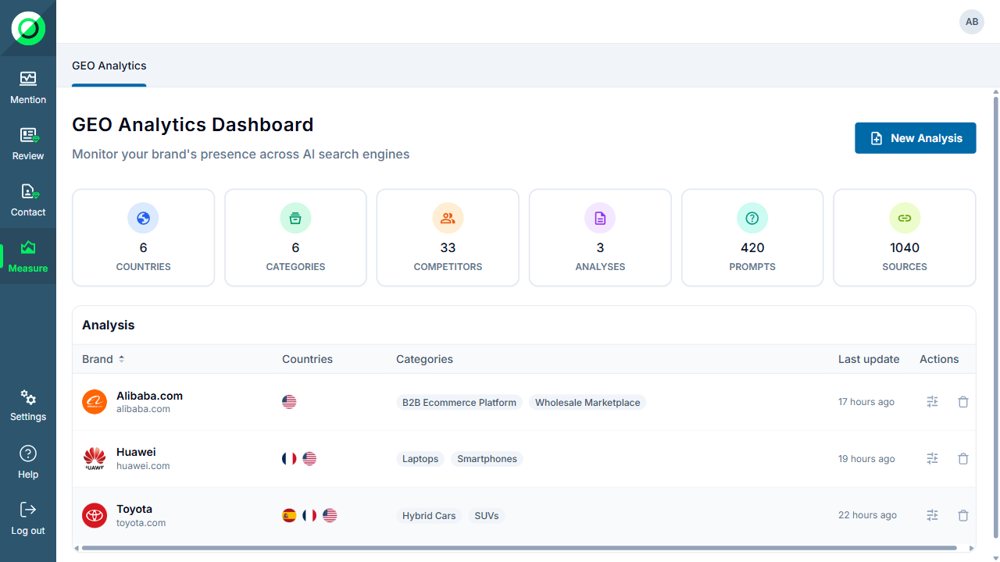
screenshot missingE2E-GEO95-001_step3_then.png
E2E-GEO95-001 step4 reports
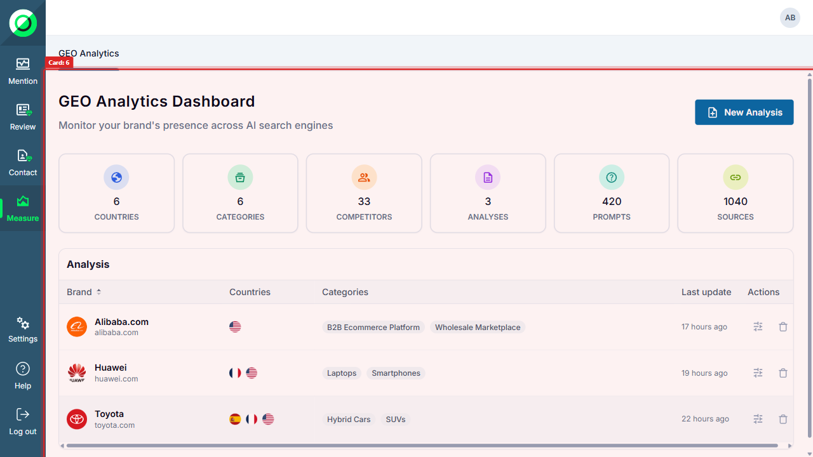
screenshot missingE2E-GEO95-001_step4_reports.png
create-default-analysis SC2 — Create default analysis (Chanel / US / English) 1 test 1 ✓ 100.0% GO
E2E-CREATE-DEFAULT-001 E2E-CREATE-DEFAULT-001 - Create default analysis (Chanel / United States / English) PASSED 95.3s
Given
an authenticated Editor opens the wizard
Step 1
When
the Editor types Peugeot in the Brand search field
Step 2
And
selects the Peugeot suggestion
Step 3
When
the Editor adds the market France
Step 4
Then
the language French is auto-detected for France
Step 5
When
the Editor adds the market Morocco
Step 6
Then
the language Arabic is auto-detected for Morocco
Step 7
When
the Editor clicks Discover Categories
Step 8
And
the Editor accepts the AI-discovered categories and adds: Hybrid Cars
Step 9
When
the Editor clicks Review Prompts
Step 10
And
the system generates default questions for each category
Step 11
When
the Editor clicks Review
Step 12
Then
the Review summary shows the Markets Categories and Total Prompts cards
Step 13
And
the Editor selects the LLMs: Claude, ChatGPT, Grok
Step 14
When
the Editor clicks Review & Launch
Step 15
Then
the user is redirected to the report overview
Step 16
When
the Editor navigates back to the reports list (BASE_URL)
Step 17
Then
the Chanel analysis row shows the value In progress in the Last update column
Step 18
GEO-dashboard-overview SC3 — Dashboard Overview Sidebar/Layout + LLM Filters + KPI Cards (GEO-79/78/72/107 / Chanel) 20 tests 9 ✓ 8 ✘ 3 - 45.0% NO-GO
GEO-79-TC001 GEO-79-TC001 — Sidebar layout is displayed PASSED 6.9s
Given
an Editor opens a completed report dashboard
Step 1
When
the dashboard loads
Step 2
Then
the sidebar shows Overview, Categories sub-items (auto-expanded), and Manage Scope entries
Step 3
Screenshots
GEO-79-TC001 step1 given
screenshot missingGEO-79-TC001_step1_given.png
GEO-79-TC001 step2 when
screenshot missingGEO-79-TC001_step2_when.png
GEO-79-TC001 step3 then
screenshot missingGEO-79-TC001_step3_then.png
GEO-79-TC002 GEO-79-TC002 — Categories accordion is auto-expanded PASSED 6.4s
Given
the dashboard sidebar is visible
Step 1
When
the dashboard loads (no click needed — Categories is auto-expanded by the app)
Step 2
Then
category sub-items are listed under Categories without any user action
Step 3
Screenshots
GEO-79-TC002 step1 given
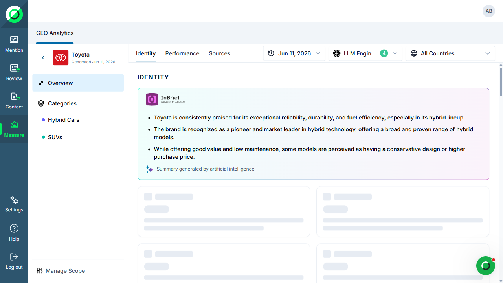
screenshot missingGEO-79-TC002_step1_given.png
GEO-79-TC002 step2 when

GEO-79-TC002_step2_when.png
GEO-79-TC002 step3 then
screenshot missingGEO-79-TC002_step3_then.png
GEO-79-TC003 GEO-79-TC003 — Active view is highlighted PASSED 5.4s
Given
the Editor is on a dashboard view
Step 1
When
the dashboard loads
Step 2
Then
the current sidebar item is visually highlighted (aria-current=page)
Step 3
Screenshots
GEO-79-TC003 step1 given
screenshot missingGEO-79-TC003_step1_given.png
GEO-79-TC003 step2 when
screenshot missingGEO-79-TC003_step2_when.png
GEO-79-TC003 step3 then
screenshot missingGEO-79-TC003_step3_then.png
GEO-79-TC007 GEO-79-TC007 — Category sub-items stay displayed for non-category sections PASSED 6.3s
Given
the Editor is on Overview (a non-category section)
Step 1
When
the dashboard loads with Overview active
Step 2
Then
the category sub-items remain visible — accordion stays expanded across non-category sections
Step 3
Screenshots
GEO-79-TC007 step1 given
screenshot missingGEO-79-TC007_step1_given.png
GEO-79-TC007 step2 when
screenshot missingGEO-79-TC007_step2_when.png
GEO-79-TC007 step3 then
screenshot missingGEO-79-TC007_step3_then.png
GEO-79-TC008 GEO-79-TC008 — Report header shows name and generated date PASSED 5.0s
Given
the Editor opens a completed report
Step 1
When
the dashboard loads
Step 2
Then
the brand name and the Generated date label are displayed
Step 3
Screenshots
GEO-79-TC008 step1 given
screenshot missingGEO-79-TC008_step1_given.png
GEO-79-TC008 step2 when
screenshot missingGEO-79-TC008_step2_when.png
GEO-79-TC008 step3 then
screenshot missingGEO-79-TC008_step3_then.png
GEO-79-TC010 GEO-79-TC010 — AC3 it shows: back arrow next to brand image FAILED 15.3s
Error details
Error: LLM engine filters button must be visible in the top bar
locator('[data-testid="llm-dropdown-trigger"]').first()
Expectedvisible
→
Actualelement not found
Given
the dashboard Top Section (brand bar)
Step 1
When
the dashboard loads
Step 2
Then
it shows: a back arrow ("Back to Analysis") next to the brand image, the Generated date and the LLM filter ✘ FAILED
Step 3
Screenshots
GEO-79-TC010 step1 given
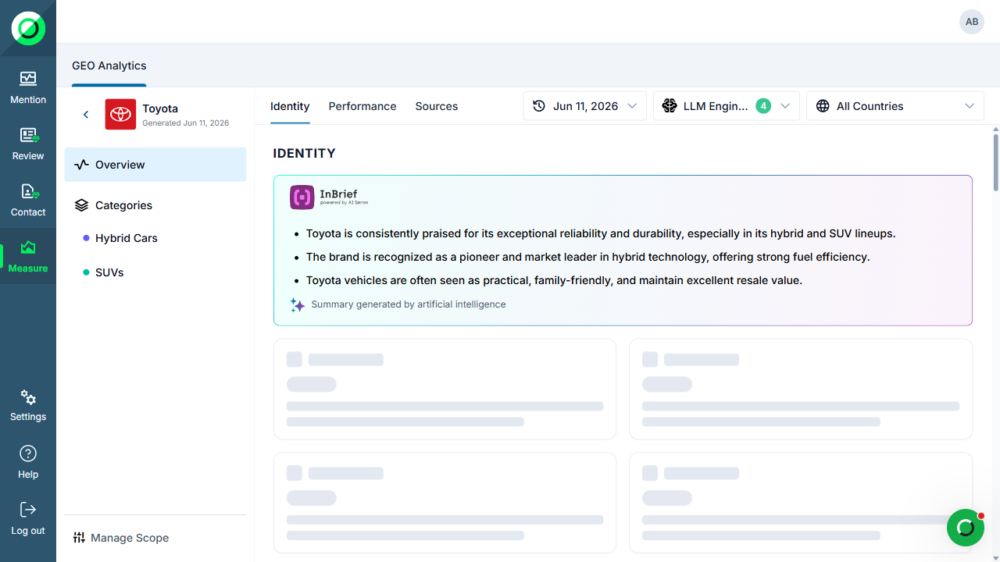
screenshot missingGEO-79-TC010_step1_given.png
GEO-79-TC010 step2 when
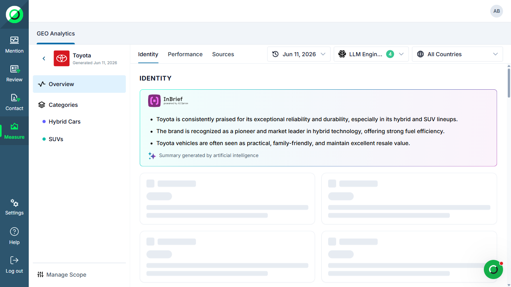
screenshot missingGEO-79-TC010_step2_when.png
Then (FAIL)
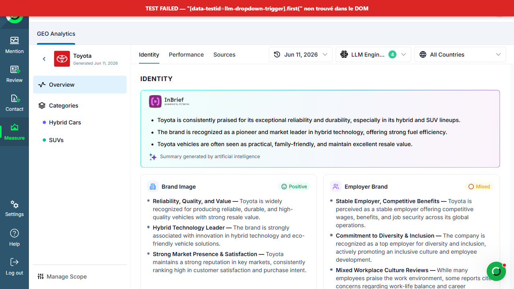
screenshot missingGEO-79-TC010_step3_then.png
GEO-78-TC007 GEO-78-TC007 — LLM Engines dropdown lists engines FAILED 35.0s
Error details
TimeoutError: locator.scrollIntoViewIfNeeded: Timeout 30000ms exceeded.
206 | // When the Editor opens the LLM Engines dropdown 207 | const llmBtn = page.locator(SEL.llmFilterBtn).first(); > 208 | await llmBtn.scrollIntoViewIfNeeded(); 209 | await llmBtn.click(); 210 | await page.waitForTimeout(500); 211 | await shot(page, 'GEO-78-TC007_step2_when');
Given
the Editor is on the dashboard
Step 1
When
the Editor opens the LLM Engines dropdown
Step 2
Then
the list of available LLMs is displayed with checkable items ✘ FAILED
Step 3
Screenshots
GEO-78-TC007 step1 given
screenshot missingGEO-78-TC007_step1_given.png
GEO-78-TC007 step2 when
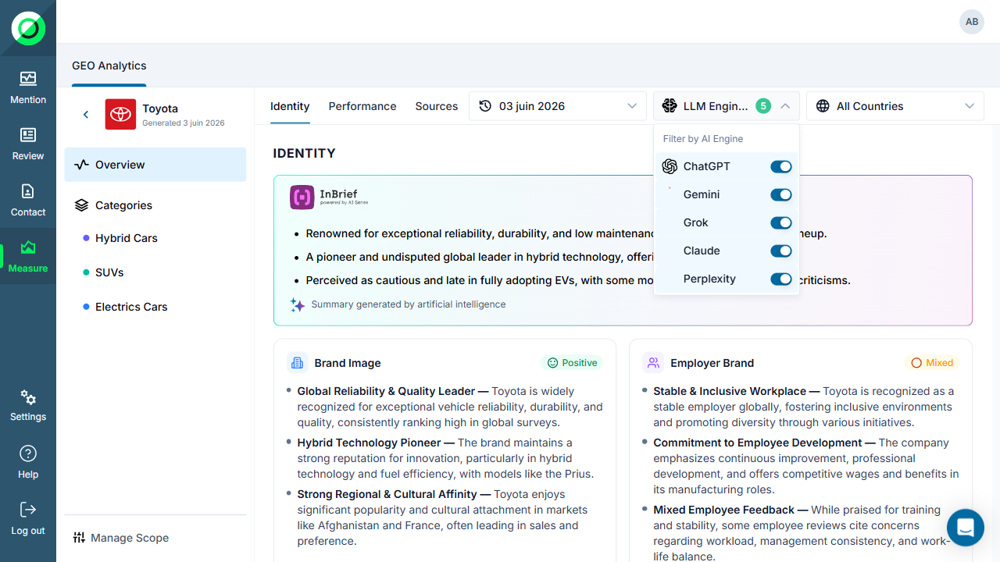
screenshot missingGEO-78-TC007_step2_when.png
Then (FAIL)
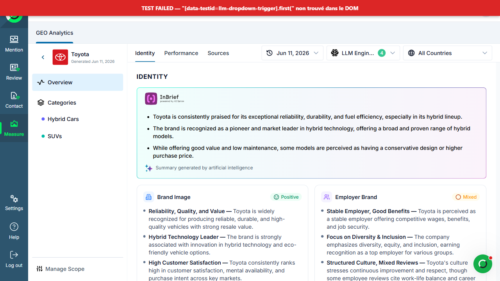
screenshot missingGEO-78-TC007_step3_then.png
GEO-72-TC001 GEO-72-TC001 — AI Perception Summary is displayed PASSED 12.6s
Given
an Editor opens the Overview page
Step 1
When
the AI Perception Summary section loads
Step 2
Then
the summary shows perception findings, key opportunities, and warnings about misperceptions
Step 3
Screenshots
GEO-72-TC001 step1 given
screenshot missingGEO-72-TC001_step1_given.png
GEO-72-TC001 step2 when
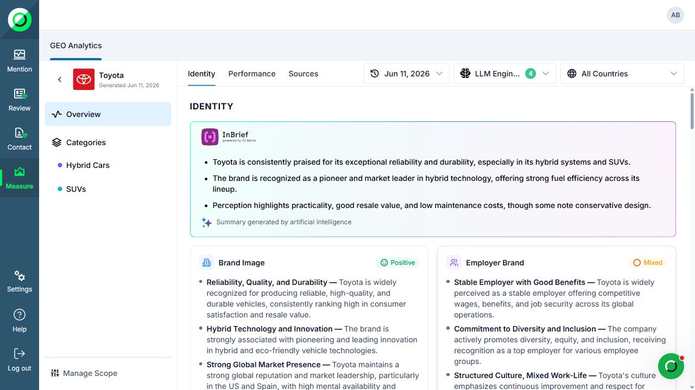
screenshot missingGEO-72-TC001_step2_when.png
GEO-72-TC001 step3 then
screenshot missingGEO-72-TC001_step3_then.png
GEO-107-TC001 GEO-107-TC001 — KPI cards are displayed FAILED 35.3s
Error details
TimeoutError: locator.scrollIntoViewIfNeeded: Timeout 30000ms exceeded.
253 | // When the KPI section loads 254 | const visibilityCard = page.locator(SEL.kpiVisibility).first(); > 255 | await visibilityCard.scrollIntoViewIfNeeded(); 256 | await shot(page, 'GEO-107-TC001_step2_when'); 257 | 258 | // Then KPI cards are visible for Visibility, LLM Choice, and Sentiment with their labels
Given
an Editor opens the Overview page
Step 1
When
the KPI section loads
Step 2
Then
KPI cards are visible for Visibility, LLM Choice, and Sentiment with their labels ✘ FAILED
Step 3
Screenshots
GEO-107-TC001 step1 given
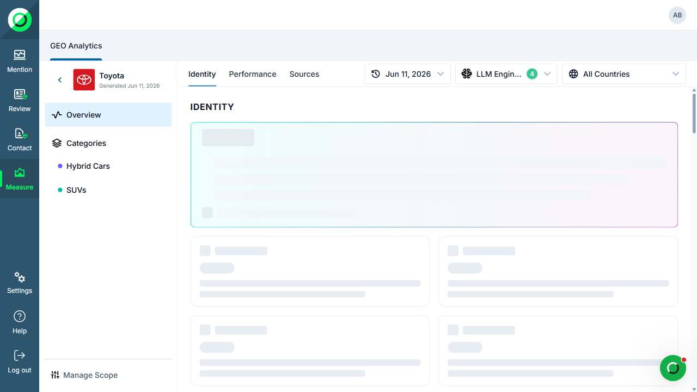
screenshot missingGEO-107-TC001_step1_given.png
GEO-107-TC001 step2 when
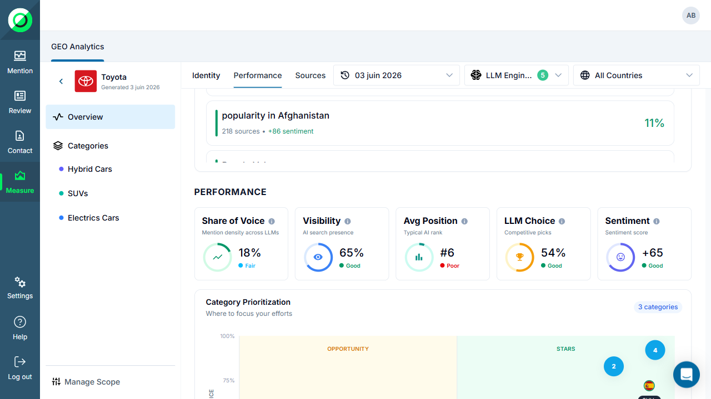
screenshot missingGEO-107-TC001_step2_when.png
Then (FAIL)
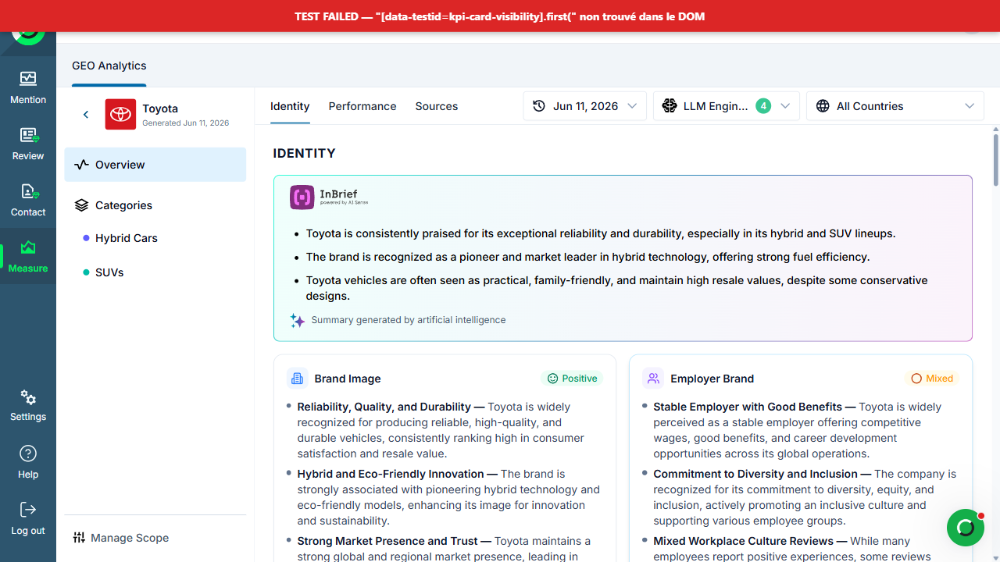
screenshot missingGEO-107-TC001_step3_then.png
GEO-107-TC011 GEO-107-TC011 — AC5 the card shows "N/A" with a muted style instead of 0 SKIPPED 0.0s
Skip reason
At least one KPI card must show N/A or "not available" for missing data
.toBeVisible()Element not found in DOMLocator:
'[aria-label*="not available"]'
Given
no data is available for a KPI type (e.g. no competitive responses yet)
Step 1
When
KPIs load
Step 2
Then
at least one KPI card shows N/A indicating no data available
Step 3
GEO-79-TC004 GEO-79-TC004 — Sidebar navigation is SPA — filters persist across views PASSED 23.5s
Given
the Editor has active filters on Overview (at minimum the LLM filter is set)
Step 1
When
the Editor clicks a different sidebar item (SPA navigation to a category sub-item)
Step 2
Then
the destination view renders AND the filters remain applied
Step 3
Screenshots
GEO-79-TC004 step1 given
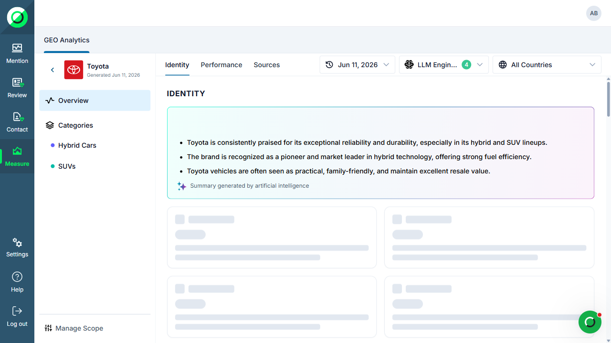
screenshot missingGEO-79-TC004_step1_given.png
GEO-79-TC004 step2 when
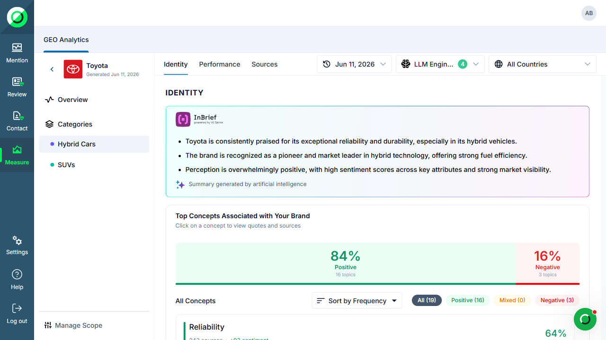
screenshot missingGEO-79-TC004_step2_when.png
GEO-79-TC004 step3 then
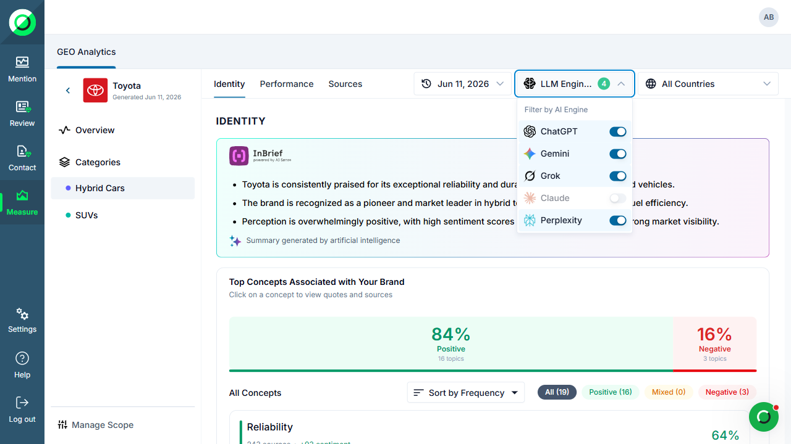
screenshot missingGEO-79-TC004_step3_then.png
GEO-79-TC005 GEO-79-TC005 — Dashboard pages load within 2 seconds FAILED 35.5s
Error details
TimeoutError: locator.waitFor: Timeout 30000ms exceeded.
520 | const t0 = Date.now();
521 | await page.goto(url, { waitUntil: options.waitUntil || 'commit' });
> 522 | await readyLocator.waitFor({ state: 'visible', timeout: options.timeout || 30000 });
523 | return Date.now() - t0;
524 | }
525 |
Given
an Editor opens the dashboard once
Step 1
When
the page is requested again — measure render time to the KPI section
Step 2
Then
the KPI section is visible within 2000 ms ✘ FAILED
Step 3
Screenshots
GEO-79-TC005 step1 given
screenshot missingGEO-79-TC005_step1_given.png
GEO-79-TC005 step2 when
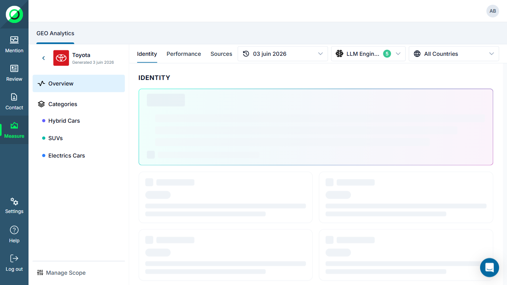
screenshot missingGEO-79-TC005_step2_when.png
Then (FAIL)
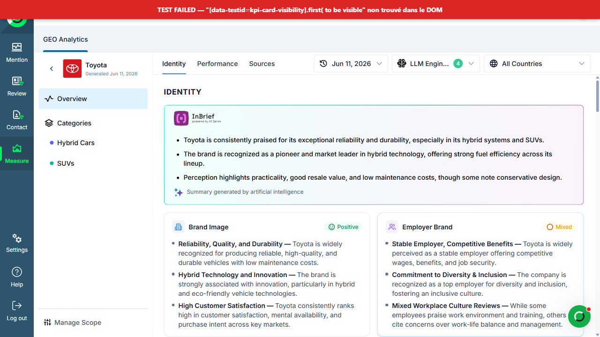
screenshot missingGEO-79-TC005_step3_then.png
GEO-79-TC006 GEO-79-TC006 — [SKIP] Discard Changes modal appears SKIPPED 0.0s
Skip reason
Requires creating an unsaved changes state on the overview page. The overview page is read-only; triggering unsaved changes requires Manage Scope edits. Re-enable with a dedicated before/after dirty-state helper.
GEO-79-TC009 GEO-79-TC009 — [SKIP] Report header has Share and Export buttons SKIPPED 0.0s
Skip reason
Share and Export buttons were not found in the DOM inspection of this dashboard. These actions may be restricted by role/permission or not yet implemented. Re-enable once DOM inspection confirms their presence on this dashboard.
IDENTITY-TC001 IDENTITY-TC001 — All 5 LLM engines are active by default FAILED 35.6s
Error details
TimeoutError: locator.click: Timeout 30000ms exceeded.
333 | // When the user opens the LLM Engines filter dropdown 334 | const llmBtn = page.locator(SEL.llmFilterBtn).first(); > 335 | await llmBtn.click(); 336 | await page.waitForTimeout(500); 337 | await shot(page, 'IDENTITY-TC001_step2_when'); 338 |
Given
an authenticated user is on the Toyota dashboard
Step 1
When
the user opens the LLM Engines filter dropdown
Step 2
Then
all 5 engines are toggled ON (aria-checked=true): ChatGPT, Gemini, Grok, Claude, Perplexity ✘ FAILED
Step 3
Screenshots
IDENTITY-TC001 step1 given
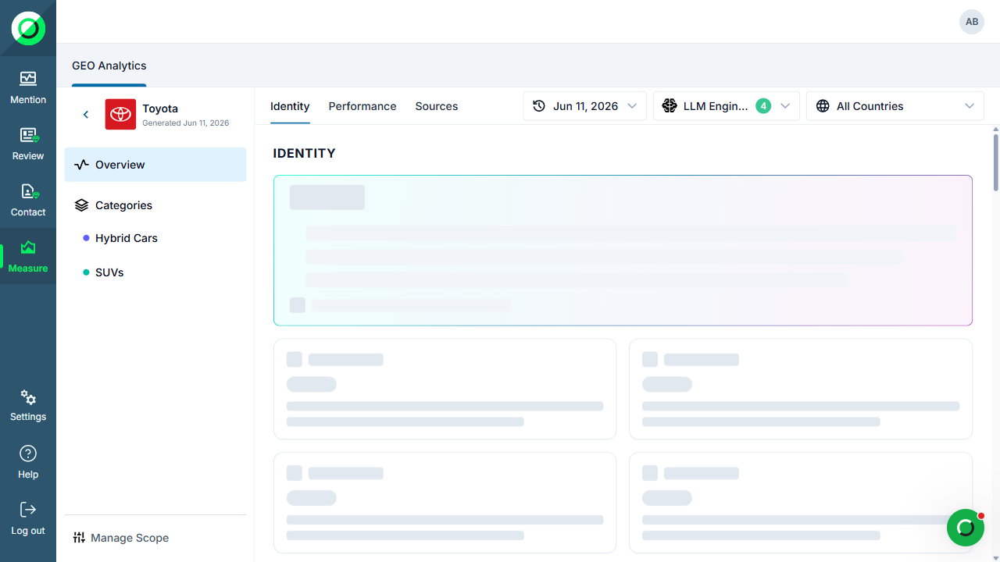
screenshot missingIDENTITY-TC001_step1_given.png
IDENTITY-TC001 step2 when
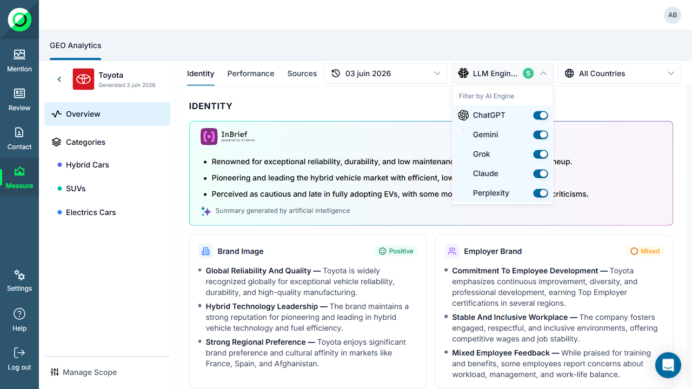
screenshot missingIDENTITY-TC001_step2_when.png
Then (FAIL)
screenshot missingIDENTITY-TC001_step3_then.png
IDENTITY-TC002 IDENTITY-TC002 — 4 identity cards present below InBrief PASSED 8.0s
Given
an authenticated user is on the Toyota dashboard with the Identity tab active
Step 1
When
the Identity section is fully rendered
Step 2
Then
exactly 4 cards are visible with titles: Brand Image, Employer Brand, ESG / Sustainability, Leadership
Step 3
Screenshots
IDENTITY-TC002 step1 given
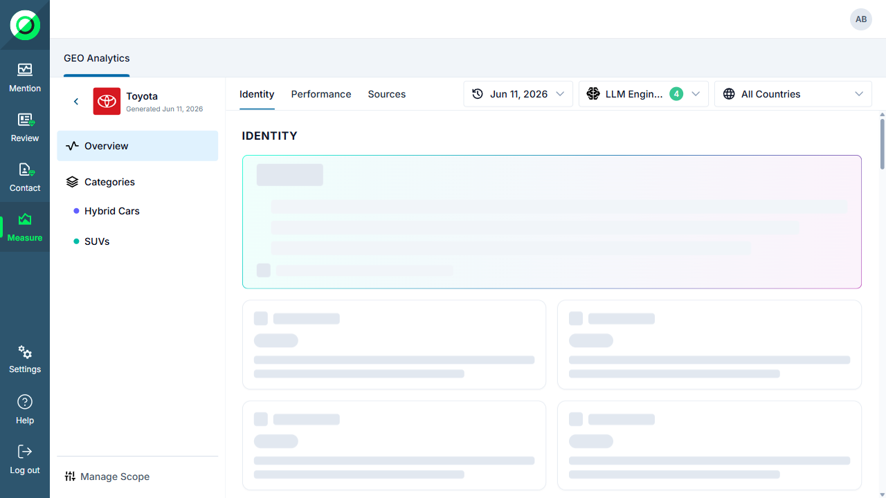
screenshot missingIDENTITY-TC002_step1_given.png
IDENTITY-TC002 step2 when
screenshot missingIDENTITY-TC002_step2_when.png
IDENTITY-TC002 step3 then
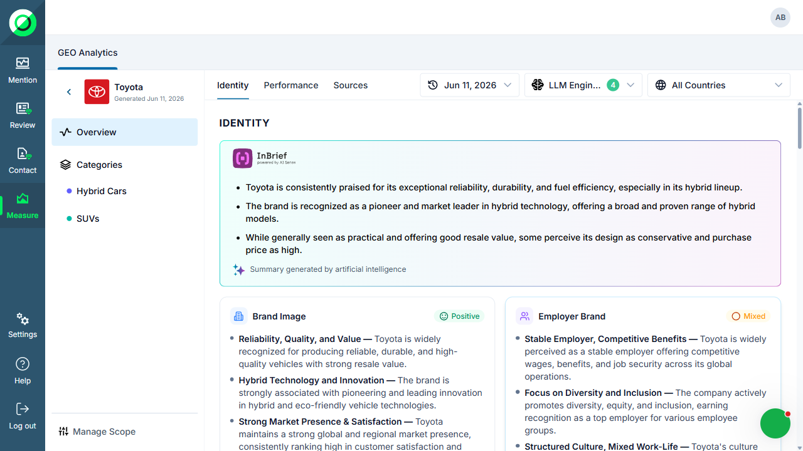
screenshot missingIDENTITY-TC002_step3_then.png
IDENTITY-TC003 IDENTITY-TC003 — Each card shows sentiment badge and 3 AI bullets PASSED 7.7s
Given
the 4 identity cards are visible
Step 1
When
the cards are fully rendered
Step 2
Then
each card displays a sentiment badge (Positive / Negative / Neutral / Mixed) and exactly 3 AI-generated bullet points
Step 3
Screenshots
IDENTITY-TC003 step1 given
screenshot missingIDENTITY-TC003_step1_given.png
IDENTITY-TC003 step2 when
screenshot missingIDENTITY-TC003_step2_when.png
IDENTITY-TC003 step3 then
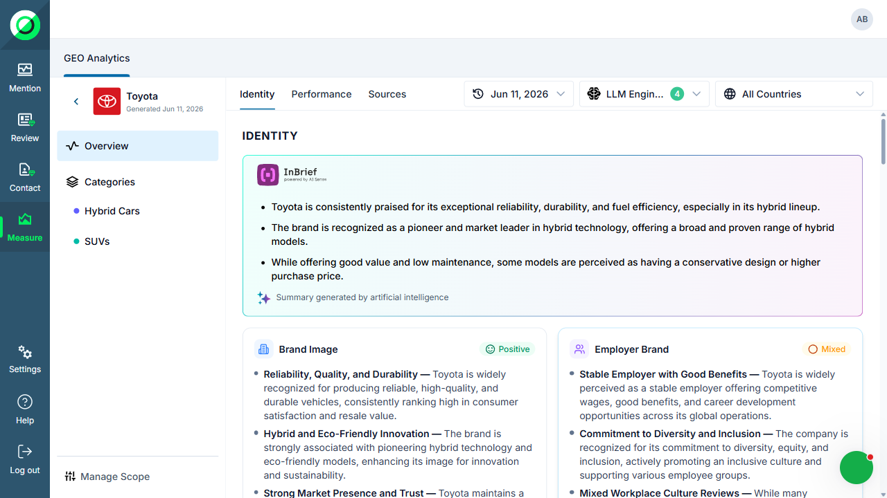
screenshot missingIDENTITY-TC003_step3_then.png
IDENTITY-TC004 IDENTITY-TC004 — Drill-in panel opens with 6 LLM tabs FAILED 13.3s
Error details
Error: LLM tab "Claude" must be visible in the drill-in panel
locator('button[aria-label="Claude"]').first()
Expectedvisible
→
Actualelement not found
Given
the 4 identity cards are visible
Step 1
When
the user clicks on the Brand Image card
Step 2
Then
the panel displays 6 tabs: All + ChatGPT + Gemini + Grok + Claude + Perplexity ✘ FAILED
Step 3
Screenshots
IDENTITY-TC004 step1 given
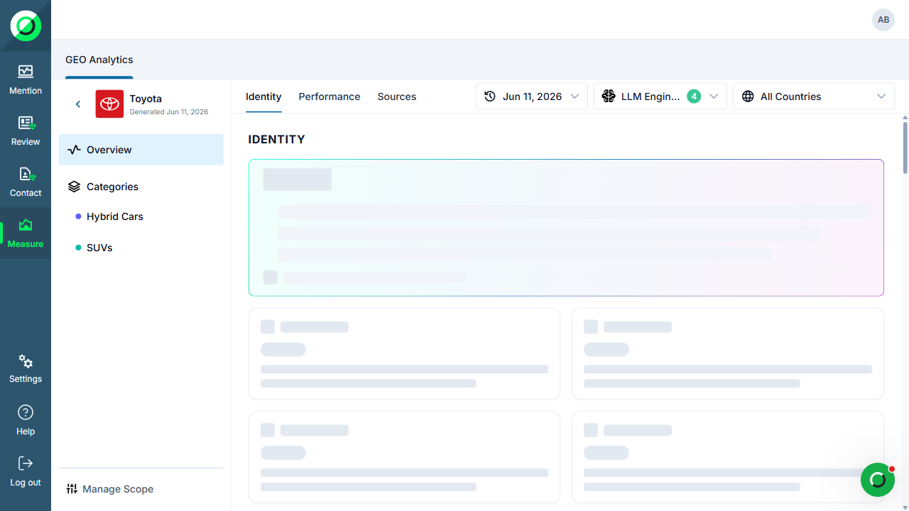
screenshot missingIDENTITY-TC004_step1_given.png
IDENTITY-TC004 step2 when
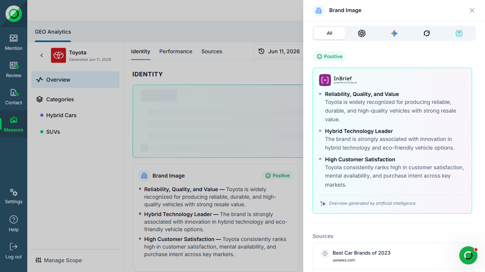
screenshot missingIDENTITY-TC004_step2_when.png
Then (FAIL)
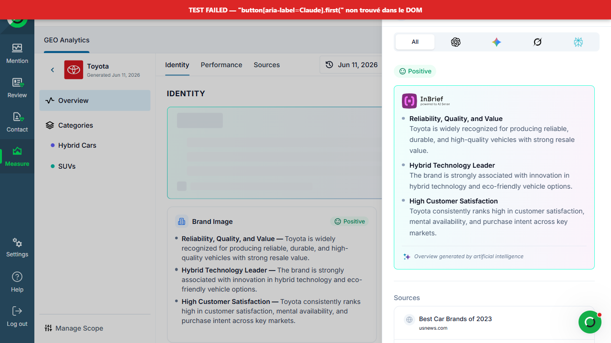
screenshot missingIDENTITY-TC004_step3_then.png
IDENTITY-TC005 IDENTITY-TC005 — Per-LLM tab shows raw bullets and engine-specific sources FAILED 42.0s
Error details
TimeoutError: locator.click: Timeout 30000ms exceeded.
488 | const perEngineBullets = {};
489 | for (const engine of LLM_ENGINES) {
> 490 | await page.locator(`button[aria-label="${engine}"]`).first().click();
491 | // Wait for panel content to update — sources load asynchronously after tab switch
492 | await page.waitForTimeout(1500);
493 |
Given
the user has opened the Brand Image drill-in panel with the All tab active
Step 1
When
the user switches to a specific LLM tab (ChatGPT, Gemini, Grok, Claude, Perplexity)
Step 2
Then
the panel shows that LLM's raw response array directly (no consolidation) and cited sources specific to that LLM ✘ FAILED
Step 3
Screenshots
IDENTITY-TC005 step1 given
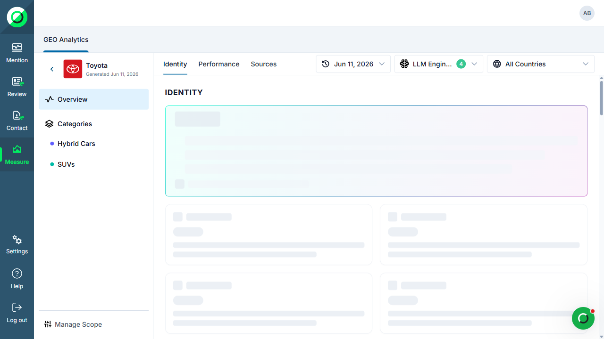
screenshot missingIDENTITY-TC005_step1_given.png
IDENTITY-TC005 step2 when
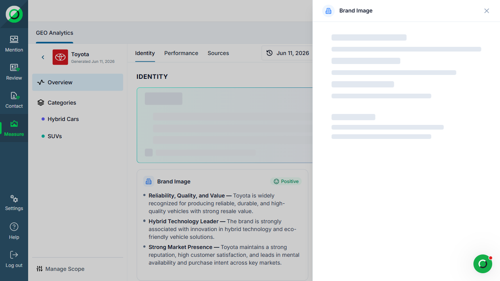
screenshot missingIDENTITY-TC005_step2_when.png
Then (FAIL)
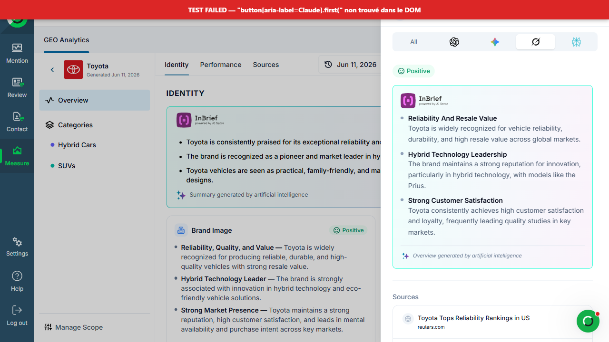
screenshot missingIDENTITY-TC005_step3_then.png
GEO-78-TC001 GEO-78-TC001 — Default market filter is All Markets FAILED 15.7s
Error details
Error: Market/Country filter button must be visible on the Overview page
locator('[data-testid="market-dropdown-trigger"]').first()
Expectedvisible
→
Actualelement not found
Given
an Editor opens the Overview page
Step 1
When
the dashboard loads with no market change
Step 2
Then
the market filter is set to All Markets by default ✘ FAILED
Step 3
Screenshots
GEO-78-TC001 step1 given
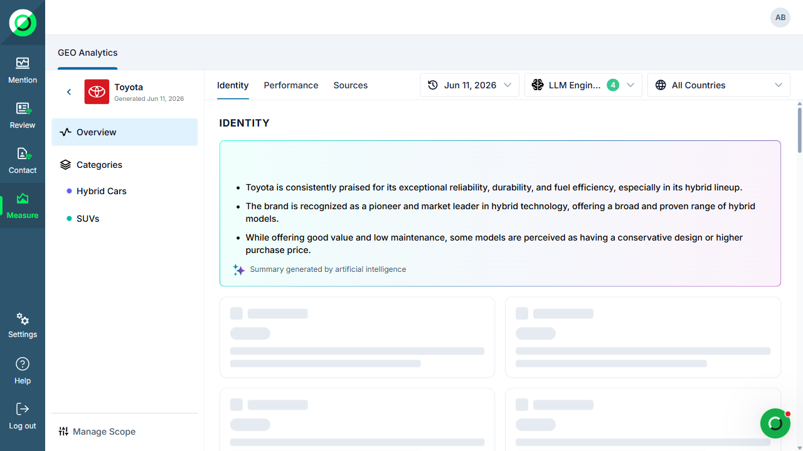
screenshot missingGEO-78-TC001_step1_given.png
GEO-78-TC001 step2 when
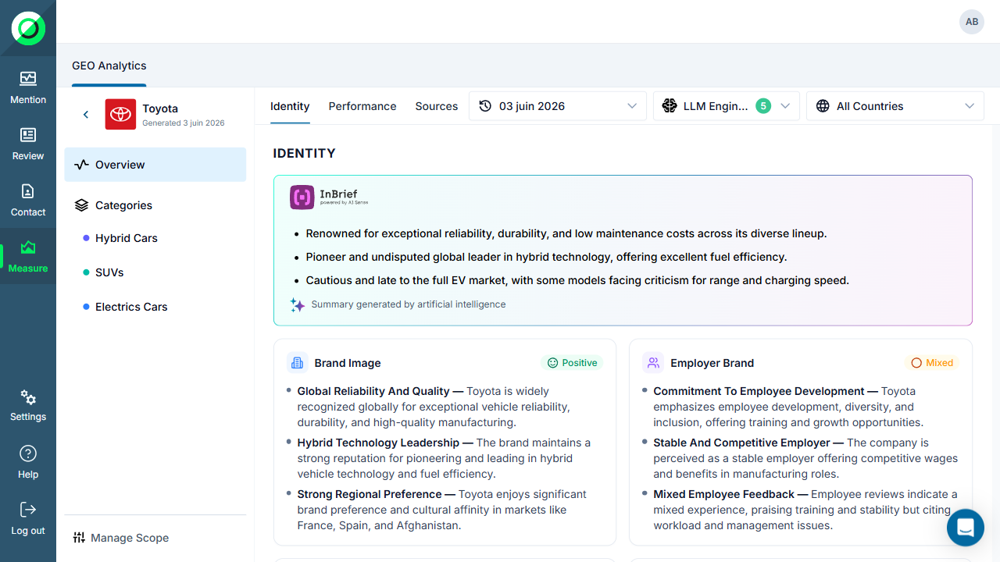
screenshot missingGEO-78-TC001_step2_when.png
Then (FAIL)
screenshot missingGEO-78-TC001_step3_then.png
verify-analysis SC4 — Verify brand analysis (reports list + dashboard) 1 test 1 ✓ 100.0% GO
E2E-VERIFY-001 E2E-VERIFY-001 - Verify brand analysis (reports list + dashboard detail) PASSED 18.8s
Given
an authenticated Editor navigates to the reports list
Step 1
When
the Editor locates the Toyota row in the reports list
Step 2
When
the Editor clicks on the Toyota analysis row
Step 3
Then
the URL matches the pattern /dashboard/{uuid}
Step 4
And
the dashboard page shows the market United States
Step 5
And
the dashboard page shows the market France
Step 6
And
the dashboard page shows the market Spain
Step 7
And
the dashboard shows exactly 3 market(s)
Step 8
And
the dashboard page shows the LLM ChatGPT
Step 9
And
the dashboard page shows the LLM Gemini
Step 10
And
the dashboard page shows at least 2 LLM engine(s)
Step 11
And
the Editor opens the Categories section in the sidebar
Step 12
And
the sidebar shows the category Hybrid Cars
Step 13
And
the sidebar shows the category SUVs
Step 14
And
the sidebar shows exactly 2 category(ies)
Step 15
Screenshots
given-reports-list

E2E-VERIFY-001_01_given-reports-list.png
when-brand-row-found

E2E-VERIFY-001_02_when-brand-row-found.png
when-brand-row-clicked
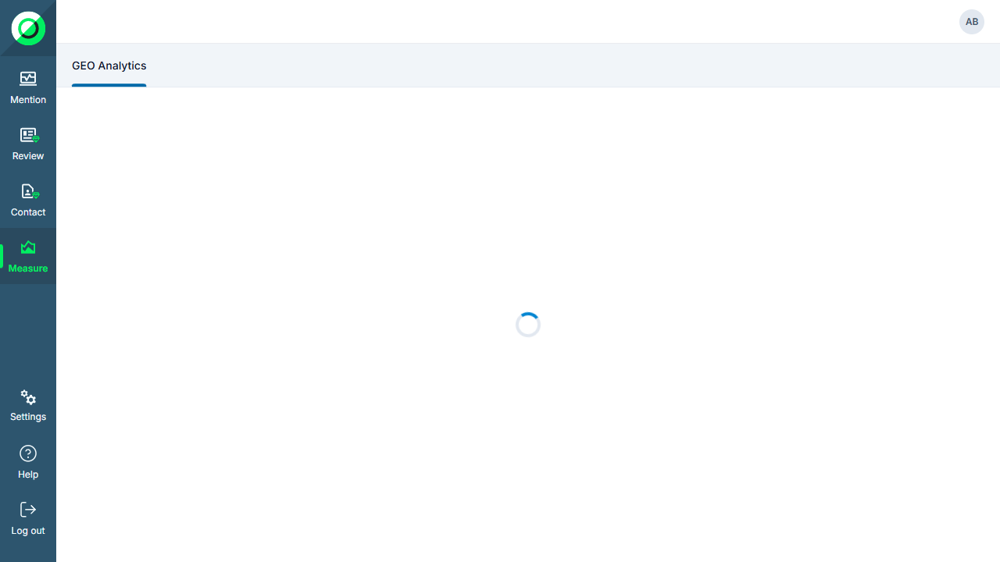
screenshot missingE2E-VERIFY-001_03_when-brand-row-clicked.png
then-dashboard-url
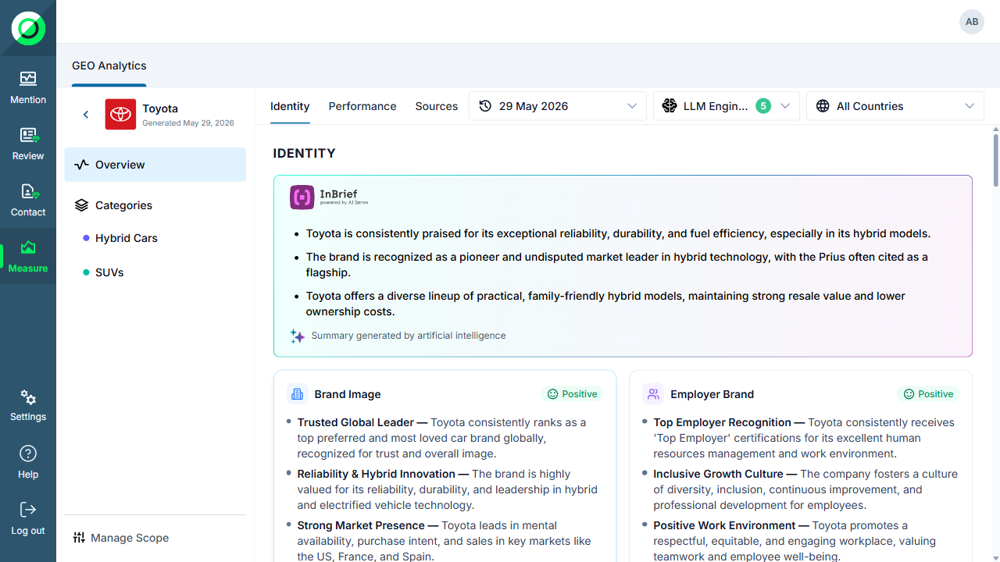
screenshot missingE2E-VERIFY-001_04_then-dashboard-url.png
E2E-VERIFY-001 category-count

E2E-VERIFY-001_category-count.png
E2E-VERIFY-001 category-hybrid-cars

E2E-VERIFY-001_category-hybrid-cars.png
E2E-VERIFY-001 category-suvs
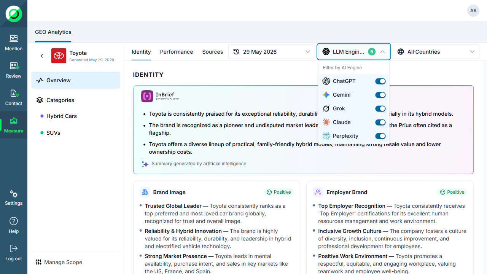
screenshot missingE2E-VERIFY-001_category-suvs.png
E2E-VERIFY-001 fail
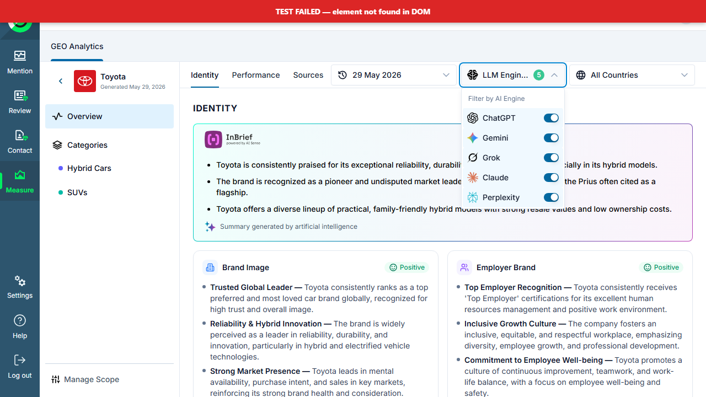
screenshot missingE2E-VERIFY-001_fail.png
E2E-VERIFY-001 llm-chatgpt
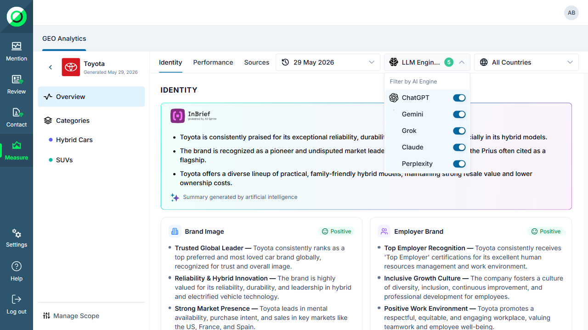
screenshot missingE2E-VERIFY-001_llm-chatgpt.png
E2E-VERIFY-001 llm-count-badge
E2E-VERIFY-001_llm-count-badge.png
E2E-VERIFY-001 llm-gemini
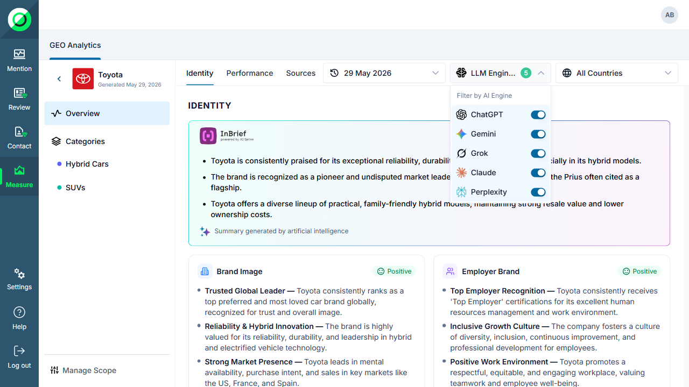
screenshot missingE2E-VERIFY-001_llm-gemini.png
E2E-VERIFY-001 market-count
screenshot missingE2E-VERIFY-001_market-count.png
E2E-VERIFY-001 market-france
screenshot missingE2E-VERIFY-001_market-france.png
E2E-VERIFY-001 market-spain
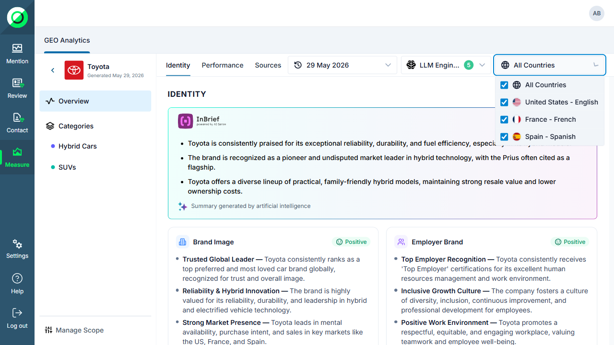
screenshot missingE2E-VERIFY-001_market-spain.png
E2E-VERIFY-001 market-united-states
screenshot missingE2E-VERIFY-001_market-united-states.png
category-top-concept SC5 — Top Concepts widget (sort, filter, detail panel & sources search) 5 tests 4 ✓ 1 ✘ 80.0% GO
E2E-TOP-CONCEPT-001 - Top Concepts — Sort modes apply correctly PASSED 10.2s
Given
an authenticated user opens the category page with concepts
Step 1
When
the user opens the Sort dropdown and applies Sort by Frequency
Step 2
Then
the concept list is monotonically ordered by frequency percentage
Step 3
When
the user applies Sort by Sentiment
Step 4
Then
the concept list is grouped by sentiment bucket (Positive/Mixed/Negative)
Step 5
When
the user applies Sort A-Z
Step 6
Then
the concept list is sorted alphabetically by concept name
Step 7
Screenshots
given-list-rendered
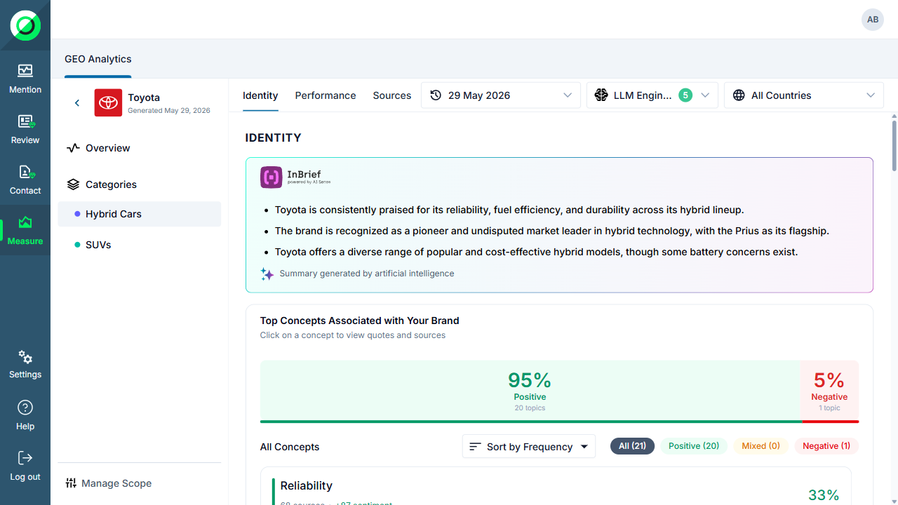
screenshot missingE2E-TOP-CONCEPT-001_01_given-list-rendered.png
when-sort-frequency

E2E-TOP-CONCEPT-001_02_when-sort-frequency.png
then-frequency-ordered

E2E-TOP-CONCEPT-001_03_then-frequency-ordered.png
when-sort-sentiment
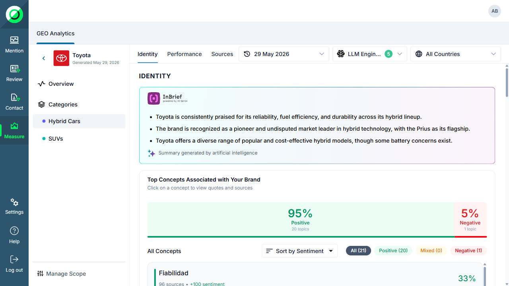
screenshot missingE2E-TOP-CONCEPT-001_04_when-sort-sentiment.png
then-sentiment-grouped

E2E-TOP-CONCEPT-001_05_then-sentiment-grouped.png
when-sort-az
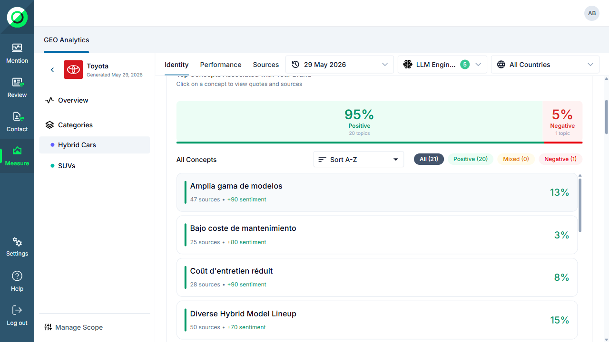
screenshot missingE2E-TOP-CONCEPT-001_06_when-sort-az.png
then-alpha-ordered
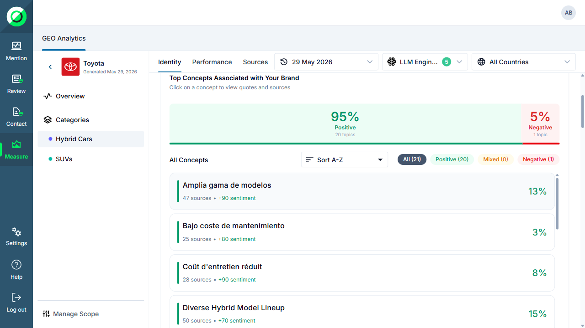
screenshot missingE2E-TOP-CONCEPT-001_07_then-alpha-ordered.png
E2E-TOP-CONCEPT-002 - Top Concepts — Sentiment filter colors PASSED 13.1s
Given
an authenticated user opens the category page with concepts
Step 1
When
the user clicks the Positive sentiment filter
Step 2
Then
every visible concept carries a green sentiment indicator (or none if filter is empty)
Step 3
When
the user clicks the Negative sentiment filter
Step 4
Then
every visible concept carries a red sentiment indicator (or none if filter is empty)
Step 5
When
the user clicks the Mixed sentiment filter
Step 6
Then
every visible concept carries a yellow sentiment indicator (or none if filter is empty)
Step 7
When
the user clicks the All filter to restore the full list
Step 8
Screenshots
given-filters-visible

E2E-TOP-CONCEPT-002_01_given-filters-visible.png
when-positive
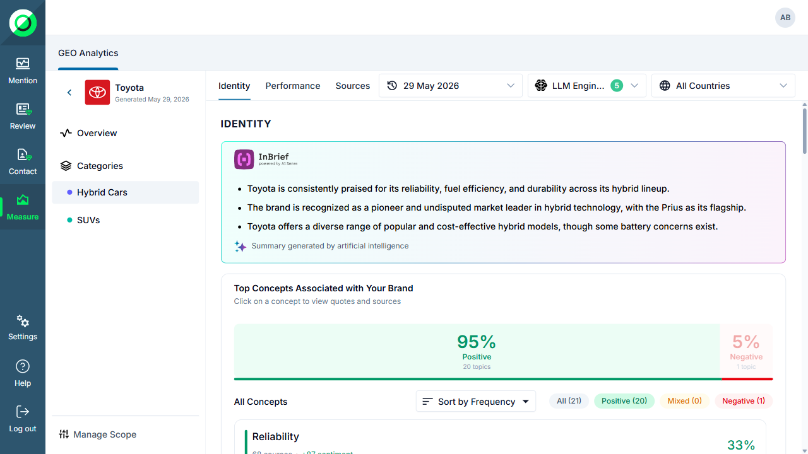
screenshot missingE2E-TOP-CONCEPT-002_02_when-positive.png
then-positive-green

E2E-TOP-CONCEPT-002_03_then-positive-green.png
when-negative

E2E-TOP-CONCEPT-002_04_when-negative.png
then-negative-red
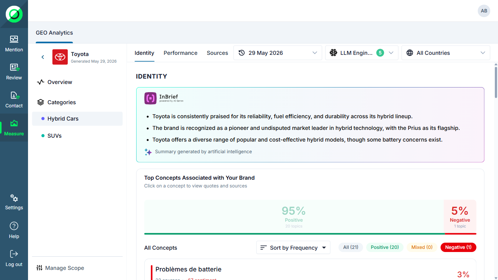
screenshot missingE2E-TOP-CONCEPT-002_05_then-negative-red.png
when-mixed
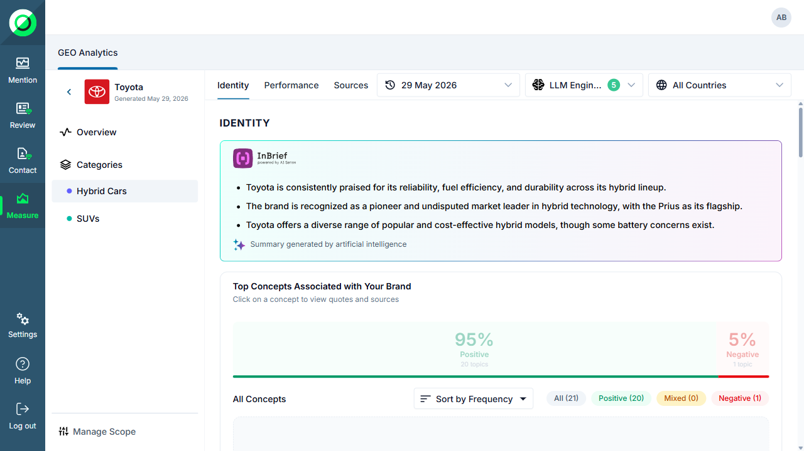
screenshot missingE2E-TOP-CONCEPT-002_06_when-mixed.png
then-mixed-empty
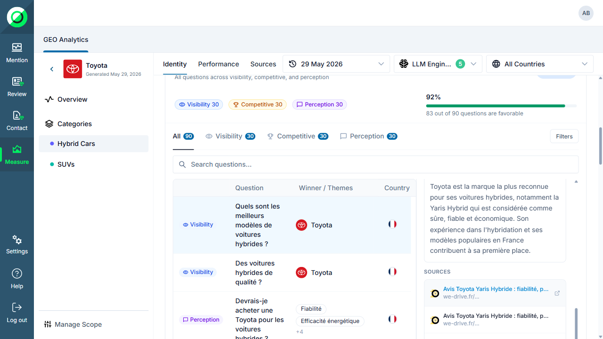
screenshot missingE2E-TOP-CONCEPT-002_07_then-mixed-empty.png
when-all-restored
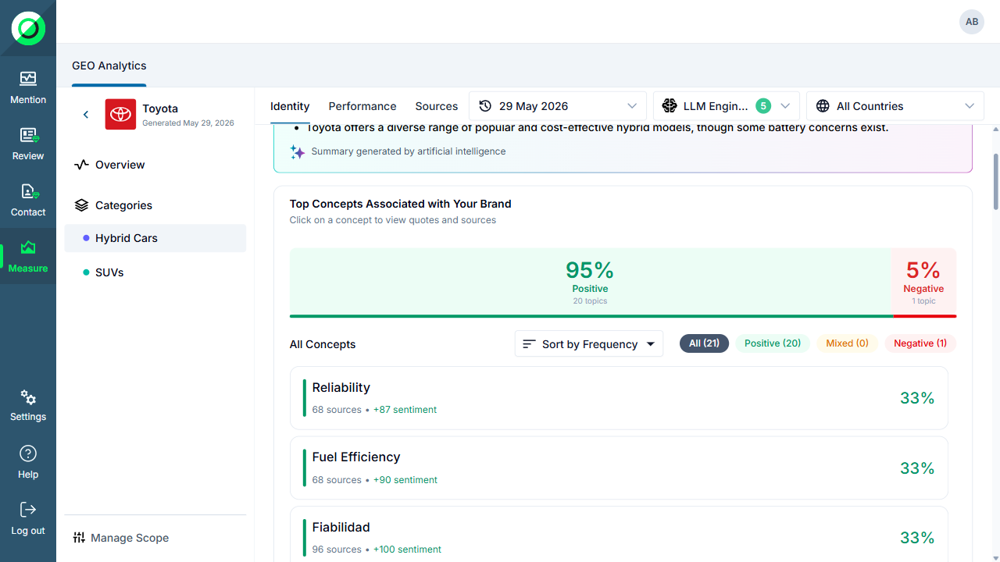
screenshot missingE2E-TOP-CONCEPT-002_09_when-all-restored.png
E2E-TOP-CONCEPT-003 - Top Concepts — Detail panel coherence (title color sections) PASSED 7.4s
Given
an authenticated user opens the category page with concepts
Step 1
When
the user captures the first concept name and sentiment color from the list
Step 2
And
the user clicks the first concept
Step 3
Then
the panel heading text matches the selected concept name
Step 4
And
the panel header banner color matches the concept list-row sentiment color
Step 5
And
the Sources section heading is visible in the panel
Step 6
And
Positive/Negative sentiment indicators are visible in the panel
Step 7
Screenshots
given-list-rendered

E2E-TOP-CONCEPT-003_01_given-list-rendered.png
when-first-captured

E2E-TOP-CONCEPT-003_02_when-first-captured.png
and-panel-opened
screenshot missingE2E-TOP-CONCEPT-003_03_and-panel-opened.png
then-title-match

E2E-TOP-CONCEPT-003_04_then-title-match.png
and-color-match
screenshot missingE2E-TOP-CONCEPT-003_05_and-color-match.png
and-sources-section

E2E-TOP-CONCEPT-003_06_and-sources-section.png
and-sentiment-indicators
screenshot missingE2E-TOP-CONCEPT-003_07_and-sentiment-indicators.png
E2E-TOP-CONCEPT-004 - Top Concepts — Sources structure (title subtitle publisher logo LLM logo nav) FAILED 7.9s
Error details
Error: Panel source rows must each have title + subtitle + publisher logo + ≥1 LLM logo image (img with alt matching chatgpt/claude/gemini/grok/openai/perplexity) + visible nav link.
Expected
0 malformed rows
→
Received
1 malformed row
"Questions Analysis"
— publisher logo alt empty, no LLM logo img
Given
an authenticated user opens the category page with concepts
Step 1
When
the user opens the detail panel of the first concept
Step 2
And
the user switches to the Sources section inside the panel
Step 3
Then
every source row in the detail panel carries a title, subtitle, publisher logo, at least one LLM logo image, and a navigation link
Step 4
When
the user opens the All sources modal
Step 5
Then
every source row in the All sources modal carries a title, subtitle, publisher logo, at least one LLM logo image, and a navigation link
Step 6
And
the All sources modal contains at least as many source rows as the panel (full set vs subset) ✘ FAILED
Step 7
Screenshots
given-list-rendered

E2E-TOP-CONCEPT-004_01_given-list-rendered.png
when-panel-opened
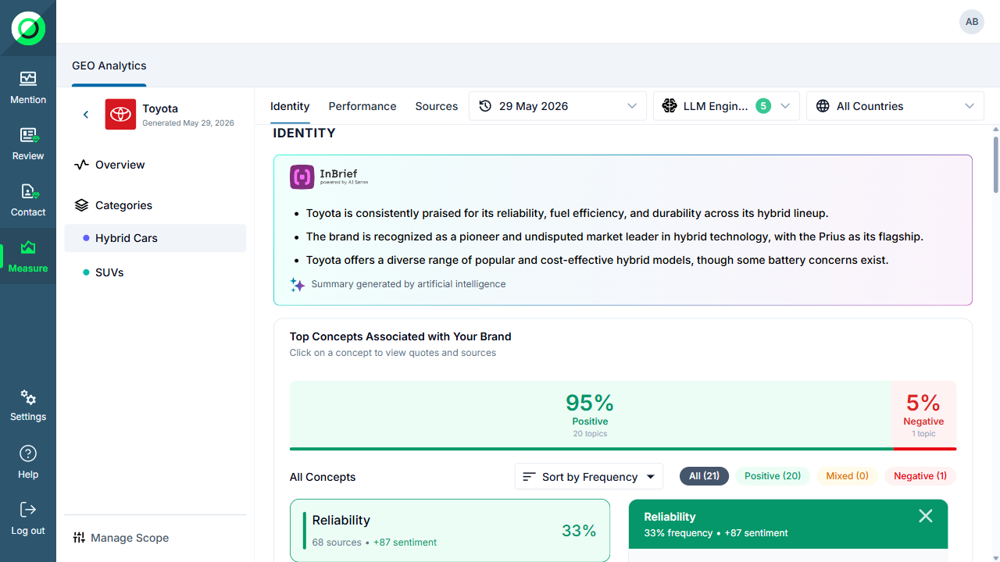
screenshot missingE2E-TOP-CONCEPT-004_02_when-panel-opened.png
and-sources-section
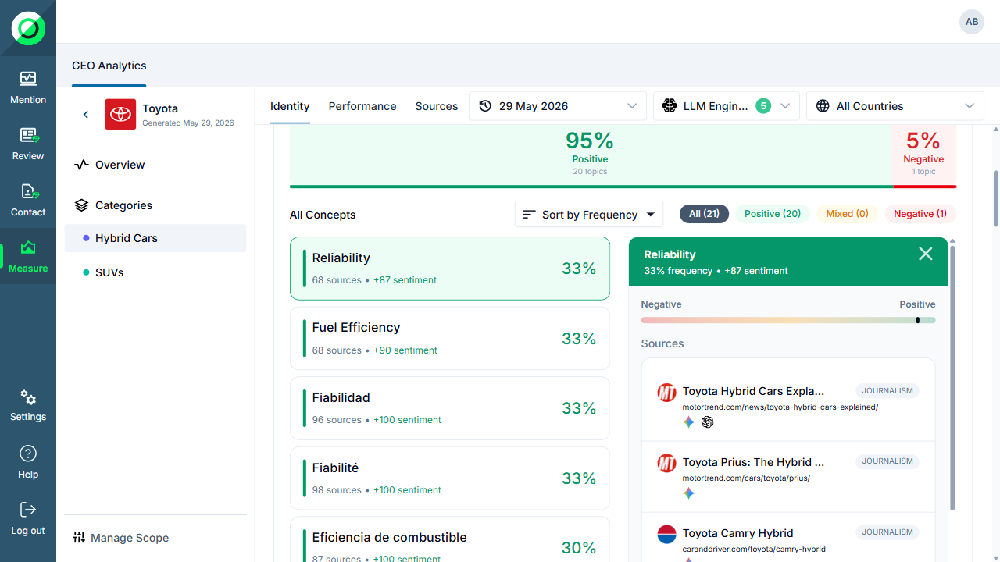
screenshot missingE2E-TOP-CONCEPT-004_03_and-sources-section.png
Then (FAIL)
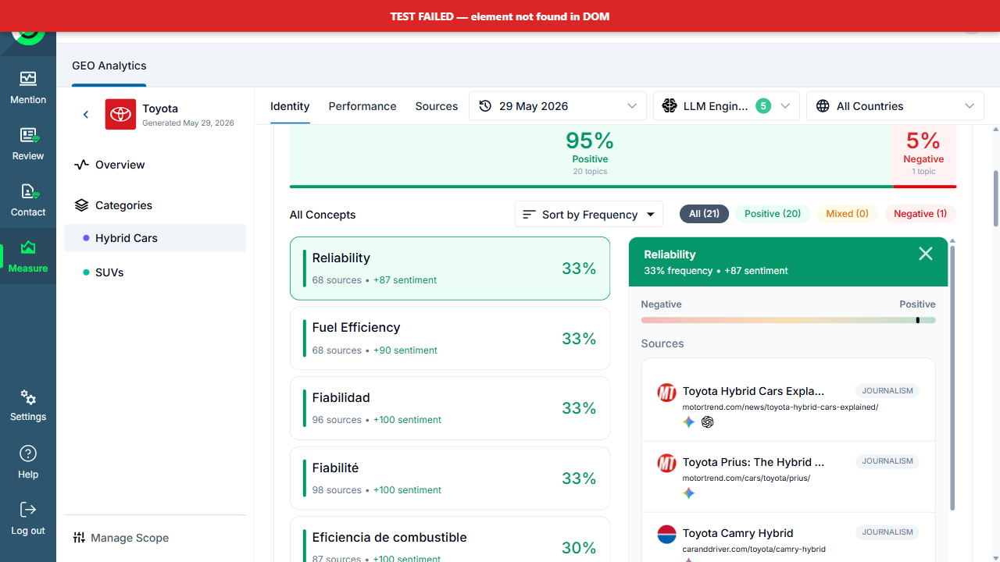
screenshot missingE2E-TOP-CONCEPT-004_fail.png
E2E-TOP-CONCEPT-005 - Top Concepts — Sources search empty state and close PASSED 10.1s
Given
an authenticated user opens the category page with concepts
Step 1
When
the user opens the detail panel of the first concept and the All sources modal
Step 2
When
the user types "1555555" in the search input
Step 3
Then
the message "No sources match your search." is visible inside the modal
Step 4
When
the user presses Escape to close the All sources modal
Step 5
And
the user clicks the Close detail panel button
Step 6
Screenshots
given-page-open
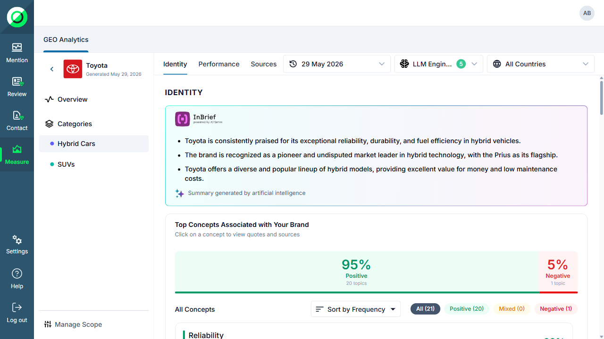
screenshot missingE2E-TOP-CONCEPT-005_01_given-page-open.png
when-modal-open
screenshot missingE2E-TOP-CONCEPT-005_02_when-modal-open.png
when-query-typed

E2E-TOP-CONCEPT-005_03_when-query-typed.png
then-no-results
screenshot missingE2E-TOP-CONCEPT-005_04_then-no-results.png
when-escape-pressed
screenshot missingE2E-TOP-CONCEPT-005_05_when-escape-pressed.png
and-panel-closed
screenshot missingE2E-TOP-CONCEPT-005_06_and-panel-closed.png
category-question-analysis SC6 — Questions Analysis panel (YSL / luxury perfume / Identity tab) 7 tests 7 ✓ 100.0% GO
E2E-QA-TC001 Default display — LLM badge / Questions Analysis heading / All tab / 4 columns / footer PASSED 5.4s
Given
navigate to YSL luxury perfume category page
Step 1
Then
LLM filter badge = 5 (all 5 engines active)
Step 2
Then
Questions Analysis heading + 4 type tabs visible
Step 3
Then
All tab active — 4 column headers + at least 1 row + footer
Step 4
Then
questions list is visible and no detail panel is open
Step 5
Screenshots
E2E-QA-TC001 step1 given
screenshot missingE2E-QA-TC001_step1_given.png
E2E-QA-TC001 step2 when
screenshot missingE2E-QA-TC001_step2_when.png
E2E-QA-TC001 step3 then

E2E-QA-TC001_step3_then.png
E2E-QA-TC001 step4 no-panel
screenshot missingE2E-QA-TC001_step4_no-panel.png
E2E-QA-TC002 Visibility tab — blue badge / Winner=brand or Lost / Market flag icon PASSED 5.5s
Given
navigate and scroll to Questions Analysis
Step 1
When
click Visibility tab
Step 2
Then
first row — blue Visibility badge / Winner or Lost / Market flag
Step 3
Then
questions list is visible and no detail panel is open
Step 4
Screenshots
E2E-QA-TC002 step1 given
screenshot missingE2E-QA-TC002_step1_given.png
E2E-QA-TC002 step2 when
screenshot missingE2E-QA-TC002_step2_when.png
E2E-QA-TC002 step3 then
screenshot missingE2E-QA-TC002_step3_then.png
E2E-QA-TC003 Competitive tab — amber badge / Winner=brand or Lost / Market flag icon PASSED 6.1s
Given
navigate and scroll to Questions Analysis
Step 1
When
click Competitive tab
Step 2
Then
first row — amber Competitive badge / Winner or Lost / Market flag
Step 3
Then
questions list is visible and no detail panel is open
Step 4
Screenshots
E2E-QA-TC003 step1 given

E2E-QA-TC003_step1_given.png
E2E-QA-TC003 step2 when
screenshot missingE2E-QA-TC003_step2_when.png
E2E-QA-TC003 step3 then
screenshot missingE2E-QA-TC003_step3_then.png
E2E-QA-TC004 Perception tab — violet badge / theme chip badges in Winner-Themes / Market flag PASSED 6.6s
Given
navigate and scroll to Questions Analysis
Step 1
When
click Perception tab
Step 2
Then
first row — violet Perception badge / theme chips in col 3 / Market flag
Step 3
Then
questions list is visible and no detail panel is open
Step 4
Screenshots
E2E-QA-TC004 step1 given
screenshot missingE2E-QA-TC004_step1_given.png
E2E-QA-TC004 step2 when
screenshot missingE2E-QA-TC004_step2_when.png
E2E-QA-TC004 step3 then
screenshot missingE2E-QA-TC004_step3_then.png
E2E-QA-TC005 Visibility panel — header / LLM logos / Ranking+SOURCES sections / LLM switch PASSED 6.6s
Given
navigate, scroll to QA, click Visibility tab, expand first row
Step 1
Then
panel header — h4 title + Visibility badge + close button visible
Step 2
Then
5 LLM logo buttons visible in the panel
Step 3
Then
panel content — 2 sections: (1) Brand Rankings / (2) AI Citation Sources
Step 4
When
switch all 5 LLMs — panel heading stays visible after each
Step 5
Screenshots
E2E-QA-TC005 step1 given
screenshot missingE2E-QA-TC005_step1_given.png
E2E-QA-TC005 step2 when
screenshot missingE2E-QA-TC005_step2_when.png
E2E-QA-TC005 step3 then
screenshot missingE2E-QA-TC005_step3_then.png
E2E-QA-TC005 step4 content

E2E-QA-TC005_step4_content.png
E2E-QA-TC005 step5 llm-switch
screenshot missingE2E-QA-TC005_step5_llm-switch.png
E2E-QA-TC006 Competitive panel — header / LLM logos / Won|Lost+About+SOURCES sections / LLM switch PASSED 6.3s
Given
navigate, scroll to QA, click Competitive tab, expand first row
Step 1
Then
panel header — h4 title + Competitive badge + close button visible
Step 2
Then
5 LLM logo buttons visible in the panel
Step 3
Then
panel content — 3 sections: (1) Won or Lost / (2) About + text / (3) SOURCES
Step 4
When
switch all 5 LLMs — panel heading stays visible after each
Step 5
Screenshots
E2E-QA-TC006 step1 given
screenshot missingE2E-QA-TC006_step1_given.png
E2E-QA-TC006 step2 when

E2E-QA-TC006_step2_when.png
E2E-QA-TC006 step3 then

E2E-QA-TC006_step3_then.png
E2E-QA-TC006 step4 content
screenshot missingE2E-QA-TC006_step4_content.png
E2E-QA-TC006 step5 llm-switch
screenshot missingE2E-QA-TC006_step5_llm-switch.png
E2E-QA-TC007 Perception panel — header / LLM logos / SENTIMENT+THEMES+Response+SOURCES / LLM switch PASSED 6.4s
Given
navigate, scroll to QA, click Perception tab, expand first row with theme data
Step 1
Then
panel header — h4 title + Perception badge + close button visible
Step 2
Then
5 LLM logo buttons visible in the panel
Step 3
Screenshots
E2E-QA-TC007 step1 given
screenshot missingE2E-QA-TC007_step1_given.png
E2E-QA-TC007 step2 when

E2E-QA-TC007_step2_when.png
E2E-QA-TC007 step3 then

E2E-QA-TC007_step3_then.png
E2E-QA-TC007 step4 content

E2E-QA-TC007_step4_content.png
E2E-QA-TC007 step5 llm-switch
screenshot missingE2E-QA-TC007_step5_llm-switch.png
category-kpi-cards-analysis SC7 — KPI cards & AI Perception Summary (vacuum cleaners / GEO-70) 8 tests 6 ✓ 2 - 75.0% CONDITIONAL
KPI-TC001 KPI-TC001 Category view shows AI Perception Summary and 5 KPI cards on load PASSED 6.7s
Given
navigate to the vacuum cleaners category page
Step 1
Then
page heading shows the category name "vacuum cleaners"
Step 2
Then
AI Perception Summary section is visible with "Powered by AI Sense" label
Step 3
And
5 KPI cards are displayed (Share of Voice / Visibility / Avg Position / LLM Choice / Sentiment)
Step 4
Screenshots
KPI-TC001 step1 given
screenshot missingKPI-TC001_step1_given.png
KPI-TC001 step2 when

KPI-TC001_step2_when.png
KPI-TC001 step3 then
screenshot missingKPI-TC001_step3_then.png
KPI-TC001 step4 kpi-cards
screenshot missingKPI-TC001_step4_kpi-cards.png
KPI-TC002 KPI-TC002 KPI cards show numeric values and quality labels (Good / Fair / Poor) PASSED 6.8s
Given
navigate to the vacuum cleaners category page
Step 1
When
KPI cards are rendered
Step 2
Then
each card shows a non-empty numeric value and a Good/Fair/Poor quality label
Step 3
Screenshots
KPI-TC002 step1 given
screenshot missingKPI-TC002_step1_given.png
KPI-TC002 step2 when
screenshot missingKPI-TC002_step2_when.png
KPI-TC002 step3 then

KPI-TC002_step3_then.png
KPI-TC003 KPI-TC003 KPI values update when the LLM filter is changed PASSED 7.8s
Given
navigate to the category page and record initial KPI values
Step 1
When
open the LLM filter and toggle one LLM engine
Step 2
Then
KPI cards remain visible and show updated values reflecting the new LLM scope
Step 3
Screenshots
KPI-TC003 step1 given
screenshot missingKPI-TC003_step1_given.png
KPI-TC003 step2 when
screenshot missingKPI-TC003_step2_when.png
KPI-TC003 step3 then
screenshot missingKPI-TC003_step3_then.png
KPI-TC004 KPI-TC004 Each KPI card value has the correct format (%, position #N, signed score) PASSED 10.8s
Given
navigate to the vacuum cleaners category page
Step 1
When
KPI cards are fully rendered
Step 2
Then
each card value matches its expected format — %, #N or signed score
Step 3
And
hovering the (i) button on each KPI card shows the correct descriptive tooltip
Step 4
Screenshots
KPI-TC004 step1 given
screenshot missingKPI-TC004_step1_given.png
KPI-TC004 step2 when
screenshot missingKPI-TC004_step2_when.png
KPI-TC004 step3 then

KPI-TC004_step3_then.png
KPI-TC004 tooltip Avg-Position
screenshot missingKPI-TC004_tooltip_Avg-Position.png
KPI-TC004 tooltip LLM-Choice
screenshot missingKPI-TC004_tooltip_LLM-Choice.png
KPI-TC004 tooltip Sentiment
screenshot missingKPI-TC004_tooltip_Sentiment.png
KPI-TC004 tooltip Share-of-Voice
screenshot missingKPI-TC004_tooltip_Share-of-Voice.png
KPI-TC004 tooltip Visibility
screenshot missingKPI-TC004_tooltip_Visibility.png
KPI-TC005 KPI-TC005 Skeleton loader appears during KPI refetch and values update after filter change SKIPPED 0.0s
Skip reason
No KPI value changed after LLM filter toggle
Expected
true
Received
false
Given
navigate to category page and record initial KPI values
Step 1
When
LLM filter is changed — skeleton loader appears during refetch
Step 2
Then
KPI cards reload with updated values (at least one value changed)
Step 3
Screenshots
KPI-TC005 step1 given
screenshot missingKPI-TC005_step1_given.png
KPI-TC005 step2 when
screenshot missingKPI-TC005_step2_when.png
KPI-TC005 step3 then
screenshot missingKPI-TC005_step3_then.png
KPI-TC006 KPI-TC006 [SKIP] KPI card shows N/A with muted style when no data available SKIPPED 0.0s
Skip reason
No reproducible N/A state on current staging dataset. KPI cards always return numeric values for this category. Re-enable with a seeded no-data category.
KPI-TC008 KPI-TC008 KPI card values match the analyzed brand row in Brand Rankings PASSED 6.6s
Given
navigate to the Electric cars category Performance tab
Step 1
When
KPI cards and Brand Rankings table are both fully loaded on the Performance tab
Step 2
Then
Share of Voice / Visibility / Avg Position / LLM Choice values match between KPI cards and the analyzed brand row (≤ 1pp / ≤ 1 rank)
Step 3
Screenshots
KPI-TC008 step1 given
screenshot missingKPI-TC008_step1_given.png
KPI-TC008 step2 when
screenshot missingKPI-TC008_step2_when.png
KPI-TC008 step3 then
screenshot missingKPI-TC008_step3_then.png
KPI-TC007 KPI-TC007 AI Perception Summary section renders bullet-point content after page load PASSED 6.5s
Given
navigate to the vacuum cleaners category page
Step 1
When
page fully loads (networkidle)
Step 2
Then
at least one bullet-point insight is displayed in the AI Perception Summary
Step 3
Screenshots
KPI-TC007 step1 given
screenshot missingKPI-TC007_step1_given.png
KPI-TC007 step2 when
screenshot missingKPI-TC007_step2_when.png
KPI-TC007 step3 then
screenshot missingKPI-TC007_step3_then.png
category-brand-prioritization-analysis SC8 — Brand Prioritization Matrix (vacuum cleaners / GEO-69) 8 tests 7 ✓ 1 - 87.5% GO
GEO-69-TC001 GEO-69-TC001 - Category brand matrix is displayed with category-scoped data PASSED 9.2s
Given
an Editor opens a category view
Step 1
When
the matrix loads
Step 2
Then
the Brand Prioritization Matrix is shown with category-scoped data
Step 3
Screenshots
GEO-69-TC001 step1 given
screenshot missingGEO-69-TC001_step1_given.png
GEO-69-TC001 step2 when
screenshot missingGEO-69-TC001_step2_when.png
GEO-69-TC001 step3 then

GEO-69-TC001_step3_then.png
GEO-69-TC002 GEO-69-TC002 - Category brand matrix updates when LLM filter changes PASSED 13.4s
Given
LLM filters are applied
Step 1
When
the LLM filter is changed
Step 2
Then
the matrix reflects the new LLM filter scope and remains visible
Step 3
Screenshots
GEO-69-TC002 step1 given
screenshot missingGEO-69-TC002_step1_given.png
GEO-69-TC002 step2 when
screenshot missingGEO-69-TC002_step2_when.png
GEO-69-TC002 step3 then
screenshot missingGEO-69-TC002_step3_then.png
GEO-69-TC003 GEO-69-TC003 - Hovering a data point shows brand metrics in tooltip PASSED 12.8s
Given
the matrix is populated
Step 1
When
a user hovers over a data point
Step 2
Then
brand metrics are accessible on the scatter (SOV, win rate, %)
Step 3
Screenshots
GEO-69-TC003 step1 given

GEO-69-TC003_step1_given.png
GEO-69-TC003 step2 when
screenshot missingGEO-69-TC003_step2_when.png
GEO-69-TC003 step3 then
screenshot missingGEO-69-TC003_step3_then.png
GEO-69-TC004 GEO-69-TC004 - All markets view shows multiple brand data points PASSED 6.7s
Given
All markets filter (default state)
Step 1
When
the matrix loads
Step 2
Then
multiple brand data points are shown across markets
Step 3
Screenshots
GEO-69-TC004 step1 given

GEO-69-TC004_step1_given.png
GEO-69-TC004 step2 when

GEO-69-TC004_step2_when.png
GEO-69-TC004 step3 then
screenshot missingGEO-69-TC004_step3_then.png
GEO-69-TC005 GEO-69-TC005 - Specific market filter shows only brands from that market PASSED 8.6s
Given
matrix loaded in All Markets view
Step 1
When
user selects a specific market from the market filter dropdown
Step 2
Then
matrix remains visible and filter no longer shows All Markets
Step 3
Screenshots
GEO-69-TC005 step1 given
screenshot missingGEO-69-TC005_step1_given.png
GEO-69-TC005 step2 when
screenshot missingGEO-69-TC005_step2_when.png
GEO-69-TC005 step3 then
screenshot missingGEO-69-TC005_step3_then.png
GEO-69-TC006 GEO-69-TC006 - [SKIP] Brand matrix shows empty state when no visibility data exists SKIPPED 0.0s
Skip reason
Empty state not reproducible on current staging dataset. The brand matrix always returns visibility data for this category. Re-enable with a seeded empty-state category.
GEO-69-TC007 GEO-69-TC007 - Quadrant legend shows all four quadrants with counts PASSED 8.0s
Given
the matrix data loaded
Step 1
When
the quadrant legend section is rendered
Step 2
Then
all four quadrant cards are visible with a numeric count: Stars N, Opportunity N, At Risk N, Monitor N
Step 3
And
the N values in each quadrant legend card match the count of brand data points in that quadrant of the chart
Step 4
Screenshots
GEO-69-TC007 step1 given

GEO-69-TC007_step1_given.png
GEO-69-TC007 step2 when
screenshot missingGEO-69-TC007_step2_when.png
GEO-69-TC007 step3 then
screenshot missingGEO-69-TC007_step3_then.png
GEO-69-TC008 GEO-69-TC008 - Brand tooltip metrics match category KPI cards PASSED 9.0s
Given
the GEO Analytics dashboard for a category (e.g., Running Shoes) displays the KPI cards (Share of Voice, Visibility, Avg Position)
Step 1
When
the user hovers over the data point for the target brand (Adidas Adizero Evo SL) in the Brand Prioritization Matrix
Step 2
Then
the tooltip Visibility, Share of Voice and Position values are identical to the KPI cards
Step 3
Screenshots
GEO-69-TC008 step1 given
screenshot missingGEO-69-TC008_step1_given.png
GEO-69-TC008 step2 when
screenshot missingGEO-69-TC008_step2_when.png
GEO-69-TC008 step3 then
screenshot missingGEO-69-TC008_step3_then.png
category-brand-rankings-analysis SC9 — Brand Rankings table (vacuum cleaners / GEO-68) 9 tests 6 ✓ 3 - 66.7% CONDITIONAL
GEO-68-TC001 GEO-68-TC001 - Brand Rankings table is displayed for the category PASSED 8.4s
Screenshots
GEO-68-TC001 step1 given
screenshot missingGEO-68-TC001_step1_given.png
GEO-68-TC001 step2 when

GEO-68-TC001_step2_when.png
GEO-68-TC001 step3 then
screenshot missingGEO-68-TC001_step3_then.png
GEO-68-TC002 GEO-68-TC002 - Brand Rankings update when LLM filter changes PASSED 9.7s
Screenshots
GEO-68-TC002 step1 given
screenshot missingGEO-68-TC002_step1_given.png
GEO-68-TC002 step2 when
screenshot missingGEO-68-TC002_step2_when.png
GEO-68-TC002 step3 then

GEO-68-TC002_step3_then.png
GEO-68-TC003 GEO-68-TC003 - Parent row shows aggregated metrics and expandable variant badge PASSED 8.1s
Screenshots
GEO-68-TC003 step1 given

GEO-68-TC003_step1_given.png
GEO-68-TC003 step2 when
screenshot missingGEO-68-TC003_step2_when.png
GEO-68-TC003 step3 then
screenshot missingGEO-68-TC003_step3_then.png
GEO-68-TC004 GEO-68-TC004 - Target brand row is highlighted with amber/gold background PASSED 27.7s
Screenshots
GEO-68-TC004 step1 given
screenshot missingGEO-68-TC004_step1_given.png
GEO-68-TC004 step2 when

GEO-68-TC004_step2_when.png
GEO-68-TC004 step3 then
screenshot missingGEO-68-TC004_step3_then.png
GEO-68-TC005 GEO-68-TC005 - [SKIP] Table recalculates when market filter changes SKIPPED 0.0s
Skip reason
The category view on current staging does not expose a market filter dropdown. Only the LLM engine filter is available. Re-enable on a dashboard with an active market filter.
GEO-68-TC006 GEO-68-TC006 - Table recalculates when LLM filter changes PASSED 9.1s
Screenshots
GEO-68-TC006 step1 given

GEO-68-TC006_step1_given.png
GEO-68-TC006 step2 when
screenshot missingGEO-68-TC006_step2_when.png
GEO-68-TC006 step3 then
screenshot missingGEO-68-TC006_step3_then.png
GEO-68-TC007 GEO-68-TC007 - All Markets filter aggregates data across all markets PASSED 6.7s
Screenshots
GEO-68-TC007 step1 given
screenshot missingGEO-68-TC007_step1_given.png
GEO-68-TC007 step2 when
screenshot missingGEO-68-TC007_step2_when.png
GEO-68-TC007 step3 then

GEO-68-TC007_step3_then.png
GEO-68-TC008 GEO-68-TC008 - [SKIP] Empty state message when no data available SKIPPED 0.0s
Skip reason
No reproducible empty-state condition on current staging dataset. The category always returns brand rankings data. Re-enable with a seeded empty-state dataset.
GEO-68-TC009 GEO-68-TC009 - [SKIP] Error state shown with retry option on API failure SKIPPED 0.0s
Skip reason
Cannot simulate an API error on current staging environment. Requires network interception or a forced backend failure. Re-enable with a mock-server approach.
category-questions-table SC10 — Questions Table (luxury handbags / GEO-67) 16 tests 13 ✓ 3 - 81.3% GO
GEO-67-TC001 GEO-67-TC001 - Questions table shows grouped questions and key columns PASSED 5.0s
Given
an Editor navigates to the category view
Step 1
When
the questions table loads
Step 2
Then
the questions table is visible with question rows and type tabs (Visibility / Competitive / Perception)
Step 3
Screenshots
GEO-67-TC001 step1 given

GEO-67-TC001_step1_given.png
GEO-67-TC001 step2 when
screenshot missingGEO-67-TC001_step2_when.png
GEO-67-TC001 step3 then

GEO-67-TC001_step3_then.png
GEO-67-TC002 GEO-67-TC002 - Visibility favorability labels are displayed PASSED 6.2s
Given
the questions table contains visibility questions
Step 1
When
the Visibility tab is selected
Step 2
Then
at least one favorability badge is visible on a visibility question row (Favorable / Neutral / Unfavorable)
Step 3
Screenshots
GEO-67-TC002 step1 given

GEO-67-TC002_step1_given.png
GEO-67-TC002 step2 when
screenshot missingGEO-67-TC002_step2_when.png
GEO-67-TC002 step3 then
screenshot missingGEO-67-TC002_step3_then.png
GEO-67-TC003 GEO-67-TC003 - Competitive favorability labels are displayed PASSED 6.0s
Given
the questions table contains competitive questions
Step 1
When
the Competitive tab is selected
Step 2
Then
at least one favorability badge is visible on a competitive question row (Favorable / Neutral / Unfavorable)
Step 3
Screenshots
GEO-67-TC003 step1 given

GEO-67-TC003_step1_given.png
GEO-67-TC003 step2 when

GEO-67-TC003_step2_when.png
GEO-67-TC003 step3 then
screenshot missingGEO-67-TC003_step3_then.png
GEO-67-TC004 GEO-67-TC004 - Perception favorability labels are displayed PASSED 6.0s
Given
the questions table contains perception questions
Step 1
When
the Perception tab is selected
Step 2
Then
at least one favorability badge and at least one theme badge are visible on a perception question row
Step 3
Screenshots
GEO-67-TC004 step1 given
screenshot missingGEO-67-TC004_step1_given.png
GEO-67-TC004 step2 when
screenshot missingGEO-67-TC004_step2_when.png
GEO-67-TC004 step3 then
screenshot missingGEO-67-TC004_step3_then.png
GEO-67-TC005 GEO-67-TC005 - Questions table filters by favorability PASSED 6.5s
Given
the questions table is loaded with questions of different favorability values
Step 1
When
the Editor opens the Filters panel and selects the Favorable filter
Step 2
Then
only Favorable questions remain visible in the table
Step 3
Screenshots
GEO-67-TC005 step1 given

GEO-67-TC005_step1_given.png
GEO-67-TC005 step2 when
screenshot missingGEO-67-TC005_step2_when.png
GEO-67-TC005 step3 then

GEO-67-TC005_step3_then.png
GEO-67-TC006 GEO-67-TC006 - Expanding a question row shows detailed evidence panel PASSED 5.8s
Given
the questions table is loaded with at least one question row
Step 1
When
the Editor clicks on a question row to expand it
Step 2
Then
the expanded detail panel is visible with LLM context buttons, ranking or sentiment content, and at least one source
Step 3
Screenshots
GEO-67-TC006 step1 given

GEO-67-TC006_step1_given.png
GEO-67-TC006 step2 when
screenshot missingGEO-67-TC006_step2_when.png
GEO-67-TC006 step3 then

GEO-67-TC006_step3_then.png
GEO-67-TC007 GEO-67-TC007 - Perception rows show sentiment and themes without rank badges PASSED 6.0s
Given
perception questions are displayed in the questions table
Step 1
When
the table renders each perception row
Step 2
Then
each perception row shows a favorability badge and at least one theme badge, and no numeric rank badge (#N) is shown
Step 3
Screenshots
GEO-67-TC007 step1 given
screenshot missingGEO-67-TC007_step1_given.png
GEO-67-TC007 step2 when

GEO-67-TC007_step2_when.png
GEO-67-TC007 step3 then

GEO-67-TC007_step3_then.png
GEO-67-TC008 GEO-67-TC008 - Search input filters question rows by text PASSED 5.9s
Given
the questions table is loaded
Step 1
When
the Editor types a keyword in the "Search questions..." input field
Step 2
Then
the visible rows are reduced to only those containing the search keyword
Step 3
Screenshots
GEO-67-TC008 step1 given
screenshot missingGEO-67-TC008_step1_given.png
GEO-67-TC008 step2 when
screenshot missingGEO-67-TC008_step2_when.png
GEO-67-TC008 step3 then
screenshot missingGEO-67-TC008_step3_then.png
GEO-67-TC009 GEO-67-TC009 - Filters button opens favorability filter panel PASSED 7.0s
Given
the questions table is loaded
Step 1
When
the Editor clicks the Filters button and selects a favorability option
Step 2
Then
the table filters accordingly and the filter is combinable with the question type tabs and the search bar
Step 3
Screenshots
GEO-67-TC009 step1 given

GEO-67-TC009_step1_given.png
GEO-67-TC009 step2 when

GEO-67-TC009_step2_when.png
GEO-67-TC009 step3 then

GEO-67-TC009_step3_then.png
GEO-67-TC010 GEO-67-TC010 - Visibility row detail panel shows LLM rank badges and sources PASSED 6.4s
Given
the Visibility tab is active and at least one visibility question is visible
Step 1
When
the Editor clicks to expand a visibility question row
Step 2
Then
the detail panel shows per-LLM rank buttons at the top, a position/rank value, and at least one source entry
Step 3
Screenshots
GEO-67-TC010 step1 given

GEO-67-TC010_step1_given.png
GEO-67-TC010 step2 when
screenshot missingGEO-67-TC010_step2_when.png
GEO-67-TC010 step3 then

GEO-67-TC010_step3_then.png
GEO-67-TC011 GEO-67-TC011 - Competitive row detail panel shows win/loss and ranking PASSED 6.4s
Given
the Competitive tab is active and at least one competitive question is visible
Step 1
When
the Editor clicks to expand a competitive question row
Step 2
Then
the detail panel shows per-LLM buttons, a win/loss result badge, and a ranked list of entities
Step 3
Screenshots
GEO-67-TC011 step1 given
screenshot missingGEO-67-TC011_step1_given.png
GEO-67-TC011 step2 when

GEO-67-TC011_step2_when.png
GEO-67-TC011 step3 then
screenshot missingGEO-67-TC011_step3_then.png
GEO-67-TC012 GEO-67-TC012 - Perception row detail panel shows sentiment and theme badges PASSED 6.3s
Given
the Perception tab is active and at least one perception question is visible
Step 1
When
the Editor clicks to expand a perception question row
Step 2
Then
the detail panel shows a sentiment badge (Positive / Mixed / Negative), at least one theme badge, and at least one source
Step 3
Screenshots
GEO-67-TC012 step1 given
screenshot missingGEO-67-TC012_step1_given.png
GEO-67-TC012 step2 when
screenshot missingGEO-67-TC012_step2_when.png
GEO-67-TC012 step3 then

GEO-67-TC012_step3_then.png
GEO-67-TC013 GEO-67-TC013 - [SKIP] Table filters by selected market SKIPPED 0.0s
Skip reason
The category view on current staging does not expose a market filter dropdown. Only the LLM engine filter is available. Re-enable on a dashboard that exposes a market filter on the category page.
GEO-67-TC014 GEO-67-TC014 - Table recalculates when LLM filter changes PASSED 6.5s
Given
the questions table is loaded with all LLM engines active
Step 1
When
the user deselects one LLM engine from the LLM engine filter
Step 2
Then
the questions table remains visible and reflects the updated status/favorability based on the filtered LLM pool only
Step 3
Screenshots
GEO-67-TC014 step1 given

GEO-67-TC014_step1_given.png
GEO-67-TC014 step2 when
screenshot missingGEO-67-TC014_step2_when.png
GEO-67-TC014 step3 then
screenshot missingGEO-67-TC014_step3_then.png
GEO-67-TC015 GEO-67-TC015 - [SKIP] Empty state message when no question data available SKIPPED 0.0s
Skip reason
No reproducible empty-state condition on current staging dataset. The category always returns question data. Re-enable with a seeded empty-state dataset.
GEO-67-TC016 GEO-67-TC016 - [SKIP] Error state shown with retry option on API failure SKIPPED 0.0s
Skip reason
Cannot simulate an API error on current staging environment. Requires network interception or a forced backend failure to trigger the error state with retry option.
manage-scope SC11 — Manage Scope page (GEO-61 Markets/Categories + GEO-60 LLM Engines) 18 tests 6 ✓ 12 - 33.3% NO-GO
GEO-61-TC001 GEO-61-TC001 — Current scope is displayed on Manage Scope PASSED 5.1s
Given
an authenticated Editor navigates to the Manage Scope page
Step 1
When
the page finishes loading
Step 2
Then
the page shows at least one country entry with a Primary badge, at least one category row, the AI Engines section, and the Analysis Information heading
Step 3
Screenshots
GEO-61-TC001 step1 given

GEO-61-TC001_step1_given.png
GEO-61-TC001 step2 when

GEO-61-TC001_step2_when.png
GEO-61-TC001 step3 then
screenshot missingGEO-61-TC001_step3_then.png
GEO-61-TC002 GEO-61-TC002 — Add Country button is visible and enabled PASSED 4.4s
Given
the Editor is on the Manage Scope page and the Countries/Markets section is visible
Step 1
When
the Editor views the Countries/Markets section
Step 2
Then
an "Add Country" button is visible and not disabled
Step 3
Screenshots
GEO-61-TC002 step1 given

GEO-61-TC002_step1_given.png
GEO-61-TC002 step2 when

GEO-61-TC002_step2_when.png
GEO-61-TC002 step3 then

GEO-61-TC002_step3_then.png
GEO-61-TC003 GEO-61-TC003 — Add Topic button is visible and enabled PASSED 5.1s
Given
the Editor is on the Manage Scope page and the Categories section is visible
Step 1
When
the Editor views the Categories section
Step 2
Then
an "Add Topic" button is visible and not disabled
Step 3
Screenshots
GEO-61-TC003 step1 given

GEO-61-TC003_step1_given.png
GEO-61-TC003 step2 when

GEO-61-TC003_step2_when.png
GEO-61-TC003 step3 then

GEO-61-TC003_step3_then.png
GEO-61-TC004 GEO-61-TC004 — Remove control visible on country row PASSED 4.8s
Given
the Editor is on the Manage Scope page and the Countries section shows at least one country row
Step 1
When
the Editor inspects the first country row
Step 2
Then
a remove or delete icon/button is visible on the country row
Step 3
Screenshots
GEO-61-TC004 step1 given

GEO-61-TC004_step1_given.png
GEO-61-TC004 step2 when

GEO-61-TC004_step2_when.png
GEO-61-TC004 step3 then

GEO-61-TC004_step3_then.png
GEO-61-TC005 GEO-61-TC005 — Remove control visible on category row PASSED 8.1s
Given
the Editor is on the Manage Scope page and the Categories section shows at least one category row
Step 1
When
the Editor inspects the first category row
Step 2
Then
a remove or delete icon/button is visible on the category row
Step 3
Screenshots
GEO-61-TC005 step1 given

GEO-61-TC005_step1_given.png
GEO-61-TC005 step2 when

GEO-61-TC005_step2_when.png
GEO-61-TC005 step3 then
screenshot missingGEO-61-TC005_step3_then.png
GEO-60-TC001 GEO-60-TC001 — AI Engines section shows 5 LLM cards with toggles PASSED 4.6s
Given
the authenticated Editor is on the Manage Scope page
Step 1
When
the AI Engines section loads
Step 2
Then
5 LLM engine cards are visible, each showing a toggle switch
Step 3
Screenshots
GEO-60-TC001 step1 given

GEO-60-TC001_step1_given.png
GEO-60-TC001 step2 when
screenshot missingGEO-60-TC001_step2_when.png
GEO-60-TC001 step3 then

GEO-60-TC001_step3_then.png
GEO-61-TC006 GEO-61-TC006 — [SKIP] Question and competitor updates are persisted SKIPPED 0.0s
Skip reason
Requires saving actual question or competitor modifications on a live staging report, which is a destructive action affecting real analysis data. Re-enable once a dedicated test report or sandbox environment is available.
GEO-61-TC007 GEO-61-TC007 — [SKIP] Add Country disabled when max_brand_markets quota reached SKIPPED 0.0s
Skip reason
Requires the organization to have reached the max_brand_markets quota on staging. This state cannot be reliably reproduced without consuming all remaining quota slots. Re-enable with a dedicated quota-exhausted test account.
GEO-61-TC008 GEO-61-TC008 — [SKIP] Add Topic disabled when max_categories quota reached SKIPPED 0.0s
Skip reason
Requires the organization to have reached the max_categories quota on staging. Re-enable with a dedicated quota-exhausted test account.
GEO-61-TC009 GEO-61-TC009 — [SKIP] Reader role sees Manage Scope in read-only mode SKIPPED 0.0s
Skip reason
Requires authentication with a Reader-role account. Re-enable once a dedicated Reader test account (GEO_READER_EMAIL + GEO_READER_PASSWORD) is configured in the .env file.
GEO-60-TC002 GEO-60-TC002 — [SKIP] Cannot disable the last active LLM SKIPPED 0.0s
Skip reason
Requires disabling 4 of 5 LLMs sequentially on the live staging report. This modifies the live report configuration in a hard-to-reverse way. Re-enable with a sandbox report or dedicated test account where LLM changes are safely reversible.
GEO-60-TC003 GEO-60-TC003 — [SKIP] LLM configuration persists until modified again SKIPPED 0.0s
Skip reason
Requires saving an LLM configuration change (destructive) as a prerequisite. Re-enable with a dedicated sandbox report.
GEO-60-TC004 GEO-60-TC004 — [SKIP] Minimum 1 LLM constraint shows tooltip when last LLM toggle is attempted SKIPPED 0.0s
Skip reason
Requires disabling 4 LLMs to reach the single-active-LLM state. Destructive multi-step sequence on live staging data. Re-enable with a sandbox environment or a pre-configured 1-LLM test report.
GEO-60-TC005 GEO-60-TC005 — [SKIP] Last active LLM toggle is visually disabled SKIPPED 0.0s
Skip reason
Same prerequisite as TC004: reaching the single-active-LLM state requires destructive actions on the live staging report. Re-enable with a dedicated 1-LLM test report.
GEO-60-TC006 GEO-60-TC006 — [SKIP] Web Search checkbox visible and interactive on enabled LLM card SKIPPED 0.0s
Skip reason
DOM inspection confirmed the "Web search" feature is NOT present on the Manage Scope page for this dashboard (6dc13f88). LLM cards show only name + toggle. Re-enable if/when the Web search checkbox is deployed to the staging environment.
GEO-60-TC007 GEO-60-TC007 — [SKIP] Web search checkbox grayed out on disabled LLM card SKIPPED 0.0s
Skip reason
Feature absent (see TC006) AND requires a pre-configured disabled-LLM state.
GEO-60-TC008 GEO-60-TC008 — [SKIP] Reader role sees AI Engines in read-only mode SKIPPED 0.0s
Skip reason
Requires authentication with a Reader-role account. Re-enable once a dedicated Reader test account is configured in .env.
GEO-60-TC009 GEO-60-TC009 — [SKIP] LLM configuration persists after navigation SKIPPED 0.0s
Skip reason
Requires saving an LLM configuration change (destructive) as a prerequisite. Re-enable with a dedicated sandbox report where changes are safely reversible.
category-perception-citation SC12 — Perception Topics & AI Citation Sources (GEO-66 / machines de cuisine) 12 tests 7 ✓ 5 - 58.3% NO-GO
GEO-66-TC001 GEO-66-TC001 — Perception topics and sentiment filters are displayed PASSED 5.2s
Given
an authenticated Editor navigates to the category perception page
Step 1
When
the page finishes loading and the perception area is visible
Step 2
Then
"AI Perception Summary" heading is visible, "Top Concepts Associated with Your Brand" heading is visible, and sentiment filter buttons (All, Positive, Mixed, Negative) are displayed
Step 3
Screenshots
GEO-66-TC001 step1 given

GEO-66-TC001_step1_given.png
GEO-66-TC001 step2 when
screenshot missingGEO-66-TC001_step2_when.png
GEO-66-TC001 step3 then

GEO-66-TC001_step3_then.png
GEO-66-TC002 GEO-66-TC002 — AI Citation Sources section is visible with stacked legend bar and domain table PASSED 4.7s
Given
the Editor is on the category page
Step 1
When
the Editor scrolls to the AI Citation Sources section
Step 2
Then
"AI Citation Sources" heading is visible, the stacked legend bar is displayed, and the domain table has at least one row with a favorability badge
Step 3
Screenshots
GEO-66-TC002 step1 given
screenshot missingGEO-66-TC002_step1_given.png
GEO-66-TC002 step2 when
screenshot missingGEO-66-TC002_step2_when.png
GEO-66-TC002 step3 then

GEO-66-TC002_step3_then.png
GEO-66-TC003 GEO-66-TC003 — Domain row click opens AI Citation Source Details drawer PASSED 7.7s
Given
the AI Citation Sources table contains at least one domain row
Step 1
When
the Editor clicks a domain row
Step 2
Then
a right-side drawer titled "AI Citation Source Details" opens with Citation Signals (Missed Visibility, Lost to Competitors, Sentiment Issues, Citations by AI Model) and a Cited URLs list
Step 3
Screenshots
GEO-66-TC003 step1 given

GEO-66-TC003_step1_given.png
GEO-66-TC003 step2 when

GEO-66-TC003_step2_when.png
GEO-66-TC003 step3 then

GEO-66-TC003_step3_then.png
GEO-66-TC004 GEO-66-TC004 — Citation Signals shows four diagnostic cards with AI model breakdown PASSED 7.4s
Given
the AI Citation Source Details drawer is open
Step 1
When
the drawer renders the Citation Signals and Citations by AI Model sections
Step 2
Then
four diagnostic cards (Missed Visibility, Lost to Competitors, Sentiment Issues, Citations by AI Model) are visible and each AI model row (Gemini, Claude, Perplexity) shows its citation count
Step 3
Screenshots
GEO-66-TC004 step1 given

GEO-66-TC004_step1_given.png
GEO-66-TC004 step2 when

GEO-66-TC004_step2_when.png
GEO-66-TC004 step3 then
screenshot missingGEO-66-TC004_step3_then.png
GEO-66-TC005 GEO-66-TC005 — Cited URLs list shows URL references in the detail drawer PASSED 7.7s
Given
the AI Citation Source Details drawer is open
Step 1
When
the Editor scrolls to the Cited URLs section in the drawer
Step 2
Then
the Cited URLs section is visible and contains at least one URL item with title and AI model icons
Step 3
Screenshots
GEO-66-TC005 step1 given

GEO-66-TC005_step1_given.png
GEO-66-TC005 step2 when
screenshot missingGEO-66-TC005_step2_when.png
GEO-66-TC005 step3 then

GEO-66-TC005_step3_then.png
GEO-66-TC006 GEO-66-TC006 — Legend segment selection filters the domain table PASSED 5.3s
Given
the AI Citation Sources section with its stacked legend bar is visible
Step 1
When
the Editor clicks a source type segment in the legend bar
Step 2
Then
the domain table shows only rows matching the selected source type and the table is non-empty
Step 3
Screenshots
GEO-66-TC006 step1 given

GEO-66-TC006_step1_given.png
GEO-66-TC006 step2 when

GEO-66-TC006_step2_when.png
GEO-66-TC006 step3 then
screenshot missingGEO-66-TC006_step3_then.png
GEO-66-TC007 GEO-66-TC007 — [SKIP] All domains modal opens with search SKIPPED 0.0s
Skip reason
"All domains" button presence on the category page not confirmed. Pattern already validated in GEO-74-TC006 on the overview dashboard. Re-enable once DOM inspection confirms the button on this page.
GEO-66-TC008 GEO-66-TC008 — [SKIP] Market filter recalculates perception topics and citation sources SKIPPED 0.0s
Skip reason
Market filter availability on category page not confirmed. Re-enable with dedicated before/after comparison or sandboxed test report.
GEO-66-TC009 GEO-66-TC009 — [SKIP] LLM filter recalculates both components SKIPPED 0.0s
Skip reason
Requires deselecting an LLM and comparing before/after state on both Perception Topics and Citation Sources. Re-enable with a dedicated recalculation test helper.
GEO-66-TC010 GEO-66-TC010 — [SKIP] Empty state messages are displayed SKIPPED 0.0s
Skip reason
Requires a category with zero perception responses and zero citation sources. Cannot be reproduced on current staging report. Re-enable with a dedicated empty-state test category or seeded dataset.
GEO-66-TC011 GEO-66-TC011 — [SKIP] Error state displayed with retry option SKIPPED 0.0s
Skip reason
Requires simulating an API failure for the perception topics or citation sources endpoint. Cannot be triggered reliably without network interception. Re-enable with a mock-server or network interception approach.
GEO-66-TC012 GEO-66-TC012 — Sources classification: every domain in the AI Citation Sources table matches its expected source type from the oracle (GEO-393 regression) PASSED 4.7s
Given
navigate to the category page and scroll to AI Citation Sources
Step 1
When
the AI Citation Sources table is rendered with all rows (no source-type filter applied)
Step 2
Then
every domain present in BOTH the table and the oracle has actualType === expectedType (oracle: sources-classification-oracle.json)
Step 3
Screenshots
GEO-66-TC012 step1 given
screenshot missingGEO-66-TC012_step1_given.png
GEO-66-TC012 step2 when

GEO-66-TC012_step2_when.png
GEO-66-TC012 step3 then

GEO-66-TC012_step3_then.png
hubspot-upsell-pql SC13 — HubSpot Upsell PQL — Speak to Us modal & cookie consent (GEO-237) 12 tests 0 ✓ 8 ✘ 4 - 0.0% NO-GO
TC-GEO-237-001 TC-GEO-237-001 — Modal See it in action affichée au clic FAILED 21.8s
Error details
Error: "Speak to Us" button must be visible after page load
locator('button:has-text("Speak to Us")').first()
Expectedvisible
→
Actualelement not found
Given
l'user est sur la page upsell Measure
Step 1
When
il clique sur un bouton "Speak to Us"
Step 2
Then
la modal s'ouvre avec le titre "See it in action", la description, la checkbox décochée et le bouton Confirm désactivé ✘ FAILED
Step 3
Screenshots
TC-GEO-237-001 step1 given

TC-GEO-237-001_step1_given.png
TC-GEO-237-001 step2 when

TC-GEO-237-001_step2_when.png
Then (FAIL)

TC-GEO-237-001_step3_then.png
TC-GEO-237-002 TC-GEO-237-002 — Confirm activé après coche de la checkbox FAILED 21.9s
Error details
Error: "Speak to Us" button must be visible after page load
locator('button:has-text("Speak to Us")').first()
Expectedvisible
→
Actualelement not found
Given
la modal SeeItInActionModal est ouverte
Step 1
When
l'user coche la checkbox "I'm happy to be contacted for a demo"
Step 2
Then
le bouton "Confirm" devient actif (clickable) ✘ FAILED
Step 3
Screenshots
TC-GEO-237-002 step1 given

TC-GEO-237-002_step1_given.png
TC-GEO-237-002 step2 when
screenshot missingTC-GEO-237-002_step2_when.png
Then (FAIL)

TC-GEO-237-002_step3_then.png
TC-GEO-237-003 TC-GEO-237-003 — Fermeture modal sans confirmation -> aucun appel backend FAILED 21.7s
Error details
Error: "Speak to Us" button must be visible after page load
locator('button:has-text("Speak to Us")').first()
Expectedvisible
→
Actualelement not found
Given
la modal SeeItInActionModal est ouverte
Step 1
When
l'user ferme la modal (croix / backdrop / touche Escape)
Step 2
Then
la modal se ferme et aucun appel POST /api/v1/upsell/hubspot n'est effectué ✘ FAILED
Step 3
Screenshots
TC-GEO-237-003 step1 given

TC-GEO-237-003_step1_given.png
TC-GEO-237-003 step2 when

TC-GEO-237-003_step2_when.png
Then (FAIL)

TC-GEO-237-003_step3_then.png
TC-GEO-237-004 TC-GEO-237-004 — Confirmation + cookies absents -> JitBridgeModal SKIPPED 0.0s
Skip reason
Requiert un contexte sans cc_cookie (areFunctionalCookiesEnabled=false). Activer via profil JDD "no-consent".
Given
l'user est sur la page upsell Measure et les cookies Functional ne sont pas acceptés
Step 1
And
la modal SeeItInActionModal est ouverte et la checkbox est cochée
Step 2
When
l'user clique "Confirm"
Step 3
Then
la modal SeeItInActionModal se ferme
Step 4
And
la JitBridgeModal s'ouvre
Step 5
And
aucun appel POST /api/v1/upsell/hubspot n'est effectué
Step 6
TC-GEO-237-005 TC-GEO-237-005 — Acceptation dans JIT -> événement HubSpot envoyé SKIPPED 0.0s
Skip reason
Dépend de TC-004 (JitBridgeModal accessible uniquement sans cc_cookie).
Given
la JitBridgeModal est ouverte depuis le contexte upsell
Step 1
When
l'user clique "Enable support"
Step 2
Then
areFunctionalCookiesEnabled passe à true
Step 3
And
POST /api/v1/upsell/hubspot est appelé automatiquement avec la réponse 200 OK
Step 4
TC-GEO-237-006 TC-GEO-237-006 — Refus dans JIT -> PrivacyFallbackModal - aucun appel SKIPPED 0.0s
Skip reason
Dépend de TC-004 (JitBridgeModal accessible uniquement sans cc_cookie).
Given
la JitBridgeModal est ouverte depuis le contexte upsell
Step 1
When
l'user clique "I'd still like to stay private"
Step 2
Then
la PrivacyFallbackModal s'ouvre
Step 3
And
aucun appel POST /api/v1/upsell/hubspot n'est effectué
Step 4
TC-GEO-237-007 TC-GEO-237-007 — Confirmation + cookies accordés -> appel direct sans JitBridgeModal FAILED 22.7s
Error details
Error: expect(locator).toBeVisible() failed
locator('button:has-text("Speak to Us")').first()
Expectedvisible
→
Actualelement not found
Given
areFunctionalCookiesEnabled est true (consentement accordé) et la page upsell est chargée
Step 1
When
l'user ouvre la modal, coche la checkbox et clique "Confirm"
Step 2
Then
POST /api/v1/upsell/hubspot est appelé directement sans ouvrir la JitBridgeModal ✘ FAILED
Step 3
Screenshots
TC-GEO-237-007 step1 given

TC-GEO-237-007_step1_given.png
TC-GEO-237-007 step2 when

TC-GEO-237-007_step2_when.png
Then (FAIL)
screenshot missingTC-GEO-237-007_step3_then.png
TC-GEO-237-008 TC-GEO-237-008 — Idempotence - un seul appel HubSpot par session FAILED 22.6s
Error details
Error: expect(locator).toBeVisible() failed
locator('button:has-text("Speak to Us")').first()
Expectedvisible
→
Actualelement not found
Given
l'user a déjà cliqué "Speak to Us" et confirmé - l'événement a été envoyé
Step 1
When
il clique à nouveau sur un autre "Speak to Us" de la page et confirme
Step 2
Then
aucun deuxième appel POST /api/v1/upsell/hubspot n'est effectué ✘ FAILED
Step 3
Screenshots
TC-GEO-237-008 step1 given

TC-GEO-237-008_step1_given.png
TC-GEO-237-008 step2 when

TC-GEO-237-008_step2_when.png
Then (FAIL)

TC-GEO-237-008_step3_then.png
TC-GEO-237-009 TC-GEO-237-009 — Utilisateur @onclusive.com exclu du tracking HubSpot SKIPPED 0.0s
Skip reason
Requiert un compte test avec email @onclusive.com (profil JDD "internal-user").
Given
le JWT contient un email @onclusive.com
Step 1
When
POST /api/v1/upsell/hubspot est appelé
Step 2
Then
aucun événement n'est enregistré dans la timeline HubSpot du contact
Step 3
And
la réponse de l'endpoint est 200 OK
Step 4
TC-GEO-237-010 TC-GEO-237-010 — Erreur HubSpot non-bloquante pour l'utilisateur FAILED 22.7s
Error details
Error: expect(locator).toBeVisible() failed
locator('button:has-text("Speak to Us")').first()
Expectedvisible
→
Actualelement not found
Given
HubSpot API retourne une erreur (503) - simulée via page.route()
Step 1
When
l'user ouvre la modal, coche la checkbox et clique "Confirm"
Step 2
Then
le frontend reçoit 200 OK et aucune UI d'erreur n'est affichée à l'user ✘ FAILED
Step 3
Screenshots
TC-GEO-237-010 step1 given

TC-GEO-237-010_step1_given.png
TC-GEO-237-010 step2 when

TC-GEO-237-010_step2_when.png
Then (FAIL)

TC-GEO-237-010_step3_then.png
TC-GEO-237-011 TC-GEO-237-011 — Les 5 boutons "Speak to Us" déclenchent la même logique FAILED 22.2s
Error details
Error: "Speak to Us" button must be visible after page load
locator('button:has-text("Speak to Us")').first()
Expectedvisible
→
Actualelement not found
Given
les 5 instances du bouton "Speak to Us" sont présentes sur la page upsell Measure
Step 1
When
l'user clique sur n'importe laquelle des 5 instances
Step 2
Then
la modal SeeItInActionModal s'ouvre à chaque fois et la même logique s'applique quel que soit le bouton ✘ FAILED
Step 3
Screenshots
TC-GEO-237-011 step1 given

TC-GEO-237-011_step1_given.png
TC-GEO-237-011 step2 when

TC-GEO-237-011_step2_when.png
Then (FAIL)

TC-GEO-237-011_step3_then.png
TC-GEO-237-012 TC-GEO-237-012 — Réponse 401 ne déclenche pas de redirection Auth0 FAILED 22.8s
Error details
Error: expect(locator).toBeVisible() failed
locator('button:has-text("Speak to Us")').first()
Expectedvisible
→
Actualelement not found
Given
POST /api/v1/upsell/hubspot retourne 401 - simulé via page.route()
Step 1
When
l'user ouvre la modal, coche la checkbox et clique "Confirm"
Step 2
Then
aucune redirection vers Auth0 n'est déclenchée et l'user reste sur la page upsell ✘ FAILED
Step 3
Screenshots
TC-GEO-237-012 step1 given

TC-GEO-237-012_step1_given.png
TC-GEO-237-012 step2 when

TC-GEO-237-012_step2_when.png
Then (FAIL)

TC-GEO-237-012_step3_then.png
e2e-brand-SOV SC14 — Brand SOV — KPI row, Rankings table & SOV doughnut card on Overview (GEO-663/664) 13 tests 8 ✓ 5 - 61.5% CONDITIONAL
TC-GEO-663-001 TC-GEO-663-001 - Overview: KPI row shows exactly 4 cards without SOV PASSED 23.9s
Given
a user is authenticated and navigates to the Overview dashboard
Step 1
When
the Performance KPI row renders
Step 2
Then
exactly 4 KPI cards are displayed in order: Visibility, Avg Position, AI Choice, Sentiment
Step 3
And
no "Share of Voice" KPI card is rendered
Step 4
And
no Good/Fair/Poor quality pill for Share of Voice is rendered
Step 5
Screenshots
TC-GEO-663-001 step1 given
screenshot missingTC-GEO-663-001_step1_given.png
TC-GEO-663-001 step2 when
screenshot missingTC-GEO-663-001_step2_when.png
TC-GEO-663-001 step3 then
screenshot missingTC-GEO-663-001_step3_then.png
TC-GEO-663-003 TC-GEO-663-003 - Overview: Brand Rankings table has no SoV% column PASSED 34.3s
Given
a user is authenticated and navigates to the Overview dashboard
Step 1
When
the Brand Rankings table renders
Step 2
Then
the table columns are exactly: Rank, Brand, Visibility%, Avg Position, LLM Choice%
Step 3
And
there is no SoV% column header and no SoV% cell in any parent or variant row
Step 4
Screenshots
TC-GEO-663-003 step1 given

TC-GEO-663-003_step1_given.png
TC-GEO-663-003 step2 when
screenshot missingTC-GEO-663-003_step2_when.png
TC-GEO-663-003 step3 then
screenshot missingTC-GEO-663-003_step3_then.png
TC-GEO-663-005 TC-GEO-663-005 - Brand Rankings default sort is Visibility% descending with correct Rank order PASSED 17.1s
Given
a user is on the Overview or a Category view with the Brand Rankings table visible
Step 1
When
no explicit user sort is applied
Step 2
Then
the table rows are ordered by Visibility% descending
Step 3
And
the Rank column reflects that order with rank 1 assigned to the brand with the highest Visibility%
Step 4
And
the target brand highlight (trophy icon / "YOU" badge + amber row) is still rendered correctly
Step 5
Screenshots
TC-GEO-663-005 step1 given
screenshot missingTC-GEO-663-005_step1_given.png
TC-GEO-663-005 step2 when

TC-GEO-663-005_step2_when.png
TC-GEO-663-005 step3 then
screenshot missingTC-GEO-663-005_step3_then.png
TC-GEO-663-006 TC-GEO-663-006 - No SOV-related tooltips or i18n keys are visible after removal PASSED 16.2s
Given
a user is on the Overview or a Category view after the SOV removal
Step 1
When
the KPI row and Brand Rankings table are rendered
Step 2
Then
no SOV-specific tooltip text or raw i18n key placeholder is visible in the UI
Step 3
Screenshots
TC-GEO-663-006 step1 given

TC-GEO-663-006_step1_given.png
TC-GEO-663-006 step2 when

TC-GEO-663-006_step2_when.png
TC-GEO-663-006 step3 then
screenshot missingTC-GEO-663-006_step3_then.png
TC-GEO-664-001 TC-GEO-664-001 - SOV dedicated card renders below KPI row on Overview PASSED 20.0s
Given
a user is authenticated and navigates to the Overview dashboard with data available
Step 1
When
the page finishes loading
Step 2
Then
a full-width "Share of Voice" card is visible directly below the KPI card row
Step 3
And
the card displays the title "Share of Voice" and the subtitle "By brand, your brand is highlighted"
Step 4
And
a doughnut chart comparing the target brand against top competitors is rendered inside the card
Step 5
Screenshots
TC-GEO-664-001 step1 given
screenshot missingTC-GEO-664-001_step1_given.png
TC-GEO-664-001 step2 when

TC-GEO-664-001_step2_when.png
TC-GEO-664-001 step3 then

TC-GEO-664-001_step3_then.png
TC-GEO-664-003 TC-GEO-664-003 - Doughnut shows top 10 brands + Others slice with callouts and legend PASSED 18.0s
Given
the SOV doughnut chart is rendered with data containing more than 10 brands
Step 1
When
the chart finishes rendering
Step 2
Then
the doughnut shows exactly the top 10 brands by SOV descending plus one "Others" slice aggregating all remaining share
Step 3
And
each arc >= ~2% displays an outside percentage callout
Step 4
And
arcs with a value below ~2% have their callout hidden but their brand still appears in the legend
Step 5
And
a bottom-centered legend lists each brand with a color dot, name, and bold SOV percentage ordered by SOV desc with "Others" last
Step 6
Screenshots
TC-GEO-664-003 step1 given
screenshot missingTC-GEO-664-003_step1_given.png
TC-GEO-664-003 step2 when

TC-GEO-664-003_step2_when.png
TC-GEO-664-003 step3 then
screenshot missingTC-GEO-664-003_step3_then.png
TC-GEO-664-004 TC-GEO-664-004 - Target brand in top 10: arc emphasized and center label shows brand SOV PASSED 23.5s
Given
the SOV doughnut renders and the target brand is among the top 10 brands by SOV
Step 1
When
the doughnut finishes rendering
Step 2
Then
the target brand's arc is structurally emphasized (e.g. larger radius) relative to competitor arcs
Step 3
And
the persistent center label shows the target brand's name, SOV value, and "Share of Voice" — even when it is not the largest slice
Step 4
Screenshots
TC-GEO-664-004 step1 given
screenshot missingTC-GEO-664-004_step1_given.png
TC-GEO-664-004 step2 when
screenshot missingTC-GEO-664-004_step2_when.png
TC-GEO-664-004 step3 then
screenshot missingTC-GEO-664-004_step3_then.png
TC-GEO-664-005 TC-GEO-664-005 - Target brand not in top 10: center label still shows brand SOV from KPI SKIPPED 1.0s
Skip reason
Requires a dedicated scope where the target brand ranks below top 10 — not available on current Toyota staging dashboard
Step
SKIPPED — Requires a dedicated scope where the target brand ranks below top 10
Step 1
TC-GEO-664-006 TC-GEO-664-006 - Empty state displayed when scope has no responses SKIPPED 0.9s
Skip reason
Requires a scope/filter configuration returning zero responses — cannot be reliably reproduced without dedicated test data
Step
SKIPPED — Requires a scope/filter configuration returning zero responses
Step 1
TC-GEO-664-007 TC-GEO-664-007 - Error state shows reload button that re-fetches inline SKIPPED 0.9s
Skip reason
Requires a simulated network error (request interception) — out of scope for this E2E suite
Step
SKIPPED — Requires a simulated network error
Step 1
TC-GEO-664-008 TC-GEO-664-008 - Loading skeleton occupies chart area while data is fetching SKIPPED 1.1s
Skip reason
Loading skeleton is a race condition — requires request throttling not available in standard E2E context
Step
SKIPPED — Loading skeleton is a race condition
Step 1
TC-GEO-664-009 TC-GEO-664-009 - Filter changes recompute doughnut callouts legend and center label PASSED 22.5s
Given
the SOV doughnut chart is rendered with a given scope (market, category, engine, period)
Step 1
When
the user updates any filter (market, category, engine, or period)
Step 2
Then
the doughnut arcs, outside callouts, legend entries, and center label all recompute and refresh to reflect the new scope
Step 3
Screenshots
TC-GEO-664-009 step1 given
screenshot missingTC-GEO-664-009_step1_given.png
TC-GEO-664-009 step2 when
screenshot missingTC-GEO-664-009_step2_when.png
TC-GEO-664-009 step3 then
screenshot missingTC-GEO-664-009_step3_then.png
TC-GEO-664-010 TC-GEO-664-010 - Doughnut with 10 or fewer brands shows no Others slice SKIPPED 1.1s
Skip reason
Requires a scope with exactly 10 or fewer brands having SOV data — not available on current Toyota staging dashboard
Step
SKIPPED — Requires a scope with exactly 10 or fewer brands having SOV data
Step 1
e2e-category-SOV SC15 — Category SOV — KPI row, Rankings table & SOV card on Category view (GEO-663/664) 3 tests 3 ✓ 100.0% GO
TC-GEO-663-002 TC-GEO-663-002 - Category: KPI row shows exactly 4 cards without SOV and layout reflows cleanly PASSED 18.0s
Given
a user is authenticated and navigates to a Category view
Step 1
When
the Performance KPI row renders
Step 2
Then
it shows the same 4 KPI cards: Visibility, Avg Position, AI Choice, Sentiment — and no Share of Voice card
Step 3
And
the KPI row layout reflows cleanly for 4 cards with no broken grid or empty cell
Step 4
Screenshots
TC-GEO-663-002 step1 given
screenshot missingTC-GEO-663-002_step1_given.png
TC-GEO-663-002 step2 when
screenshot missingTC-GEO-663-002_step2_when.png
TC-GEO-663-002 step3 then
screenshot missingTC-GEO-663-002_step3_then.png
TC-GEO-663-004 TC-GEO-663-004 - Category: Brand Rankings table has no SoV% column PASSED 17.3s
Given
a user is authenticated and navigates to a Category view
Step 1
When
the Brand Rankings table renders
Step 2
Then
the table columns are exactly: Rank, Brand, Visibility%, Avg Position, LLM Choice%
Step 3
And
there is no SoV% column header and no SoV% cell in any parent or variant row
Step 4
Screenshots
TC-GEO-663-004 step1 given

TC-GEO-663-004_step1_given.png
TC-GEO-663-004 step2 when

TC-GEO-663-004_step2_when.png
TC-GEO-663-004 step3 then
screenshot missingTC-GEO-663-004_step3_then.png
TC-GEO-664-002 TC-GEO-664-002 - SOV dedicated card renders below KPI row on Category view PASSED 24.4s
Given
a user is authenticated and navigates to a Category view with data available
Step 1
When
the page finishes loading
Step 2
Then
a full-width "Share of Voice" card is visible directly below the KPI card row
Step 3
And
the card displays the title "Share of Voice" and the subtitle "By brand, your brand is highlighted"
Step 4
Screenshots
TC-GEO-664-002 step1 given

TC-GEO-664-002_step1_given.png
TC-GEO-664-002 step2 when
screenshot missingTC-GEO-664-002_step2_when.png
TC-GEO-664-002 step3 then
screenshot missingTC-GEO-664-002_step3_then.png
e2e-category-questions-detail SC16 — Category Questions Detail Panel — Favorability tiers per engine (EPIC-27/GEO-716/717) 11 tests 7 ✓ 4 - 63.6% CONDITIONAL
E2E-VIS-01 Visibility Winner vs Panel - Brand #1 All Engines PASSED 14.5s
Given
I am on a category view with a visibility question where the brand is ranked #1 in all selected LLMs
Step 1
When
I view the Winner column in the questions table list view
Step 2
Then
the detail panel shows Favorable (green) badge for the active LLM engine
Step 3
Screenshots
E2E-VIS-01 step1 given
screenshot missingE2E-VIS-01_step1_given.png
E2E-VIS-01 step2 when

E2E-VIS-01_step2_when.png
E2E-VIS-01 step3 then

E2E-VIS-01_step3_then.png
E2E-VIS-02 [SKIP] Visibility Winner vs Panel - Brand Ranked #4-10 All Engines SKIPPED 0.0s
Given
I am on a category view with a visibility question where the brand is ranked between #4 and #10 in all selected LLMs
Step 1
When
I view the Winner column in the questions table list view
Step 2
Then
each engine pill badge displays Unfavorable in amber with the corresponding rank number (#4 to #10)
Step 3
E2E-VIS-03 Visibility Winner vs Panel - Brand Unranked All Engines PASSED 22.4s
Given
I am on a category view with a visibility question where the brand is absent from all selected LLMs rankings
Step 1
When
I view the Winner column in the questions table list view
Step 2
Then
the detail panel shows Unranked (red) badge with #-- for each LLM engine
Step 3
Screenshots
E2E-VIS-03 step1 given

E2E-VIS-03_step1_given.png
E2E-VIS-03 step2 when

E2E-VIS-03_step2_when.png
E2E-VIS-03 step3 then
screenshot missingE2E-VIS-03_step3_then.png
E2E-VIS-04 Visibility Winner vs Panel - Mixed Results Split PASSED 12.9s
Given
I am on a category view with a visibility question where the brand is ranked #1 in some engines but not in others
Step 1
When
I view the Winner column in the questions table list view
Step 2
Then
the detail panel shows per-engine results — Favorable for #1 engines, and Split never appears as per-engine label
Step 3
Screenshots
E2E-VIS-04 step1 given

E2E-VIS-04_step1_given.png
E2E-VIS-04 step2 when

E2E-VIS-04_step2_when.png
E2E-VIS-04 step3 then
screenshot missingE2E-VIS-04_step3_then.png
E2E-VIS-05 [SKIP] Visibility Winner vs Panel - Brand #2 Inconsistency SKIPPED 0.0s
Given
I am on a category view with a visibility question where the brand is ranked #2 in all selected LLMs
Step 1
When
I view the Winner column in the questions table list view
Step 2
Then
the Winner column shows Lost but panel shows Favorable green (expected inconsistency documented)
Step 3
E2E-COMP-01 Competitive Winner vs Panel - Won All Engines PASSED 17.7s
Given
I am on a category view with a competitive question where the brand is chosen by all selected LLMs
Step 1
When
I view the Winner column in the questions table list view
Step 2
Then
the detail panel shows Won (green) badge and About section — no Split per-engine
Step 3
Screenshots
E2E-COMP-01 step1 given

E2E-COMP-01_step1_given.png
E2E-COMP-01 step2 when

E2E-COMP-01_step2_when.png
E2E-COMP-01 step3 then
screenshot missingE2E-COMP-01_step3_then.png
E2E-COMP-02 [SKIP] Competitive Winner vs Panel - Lost All Engines SKIPPED 0.0s
Given
I am on a category view with a competitive question where the brand is not chosen by any selected LLM
Step 1
When
I view the Winner column in the questions table list view
Step 2
Then
each engine displays Lost in red and About winner section appears
Step 3
E2E-COMP-03 Competitive Winner vs Panel - Mixed Won/Lost Split PASSED 12.4s
Given
I am on a category view with a competitive question where the brand is chosen by some engines but not others
Step 1
When
I view the Winner column in the questions table list view
Step 2
Then
the detail panel shows per-engine results — Won (green) for winning engines, Split never appears per-engine
Step 3
Screenshots
E2E-COMP-03 step1 given

E2E-COMP-03_step1_given.png
E2E-COMP-03 step2 when

E2E-COMP-03_step2_when.png
E2E-COMP-03 step3 then

E2E-COMP-03_step3_then.png
E2E-PERC-01 Perception Winner vs Panel - Positive All Engines PASSED 10.5s
Given
I am on a category view with a perception question where sentiment is positive in all selected LLMs
Step 1
When
I view the Themes column in the questions table list view
Step 2
Then
the detail panel shows Positive (green) sentiment badge, themes badges, and response text — no rank badges
Step 3
Screenshots
E2E-PERC-01 step1 given

E2E-PERC-01_step1_given.png
E2E-PERC-01 step2 when

E2E-PERC-01_step2_when.png
E2E-PERC-01 step3 then
screenshot missingE2E-PERC-01_step3_then.png
E2E-PERC-02 [SKIP] Perception Winner vs Panel - Negative All Engines SKIPPED 0.0s
Given
I am on a category view with a perception question where sentiment is negative in all selected LLMs
Step 1
When
I view the Themes column in the questions table list view
Step 2
Then
each engine displays Negative sentiment badge in red
Step 3
E2E-PERC-03 Perception Winner vs Panel - Mixed Sentiment PASSED 12.1s
Given
I am on a category view with a perception question where sentiment varies across selected LLMs
Step 1
When
I view the Themes column in the questions table
Step 2
Then
I can switch between engines and each independently shows its correct sentiment — PERC behavior is unchanged by EPIC-27
Step 3
Screenshots
E2E-PERC-03 step1 given

E2E-PERC-03_step1_given.png
E2E-PERC-03 step2 when

E2E-PERC-03_step2_when.png
E2E-PERC-03 step3 then
screenshot missingE2E-PERC-03_step3_then.png
e2e-category-question-visibility SC17 — Category Visibility — Winner column ↔ panel per-engine badge cross-validation 4 tests 4 ✓ 100.0% GO
E2E-VIS-WN-01 Visibility: Winner = Brand Name → all engines show Favorable in panel PASSED 11.0s
Given
I am on the Visibility tab of a category where the tracked brand wins
Step 1
When
I find a row where the Winner column shows the brand name (e.g., Toyota)
Step 2
Then
the detail panel shows Favorable (green) badge for every active LLM engine
Step 3
Screenshots
E2E-VIS-WN-01 step1 given

E2E-VIS-WN-01_step1_given.png
E2E-VIS-WN-01 step2 when
screenshot missingE2E-VIS-WN-01_step2_when.png
E2E-VIS-WN-01 step3 then
screenshot missingE2E-VIS-WN-01_step3_then.png
E2E-VIS-WN-02 Visibility: Winner = Competitor Name → non-Favorable in panel + competitor is #1 in ranking PASSED 48.8s
Given
I am on the Visibility tab of a category where the tracked brand is not ranked #1
Step 1
When
I find a row where the Winner column shows a competitor brand name
Step 2
Then
panel shows Unfavorable or Unranked per engine, and competitor matches #1 in ranking list
Step 3
Screenshots
E2E-VIS-WN-02 step1 given

E2E-VIS-WN-02_step1_given.png
E2E-VIS-WN-02 step2 when
screenshot missingE2E-VIS-WN-02_step2_when.png
E2E-VIS-WN-02 step3 then
screenshot missingE2E-VIS-WN-02_step3_then.png
E2E-VIS-WN-03 Visibility: Winner = "Unranked" badge → all engines show Unranked in panel PASSED 10.1s
Given
I am on the Visibility tab where the brand is absent and LLMs disagree on which competitor is #1
Step 1
When
I find a row where the Winner column shows the red "Unranked" badge
Step 2
Then
the detail panel shows Unranked (red, #--) for every active LLM engine
Step 3
Screenshots
E2E-VIS-WN-03 step1 given

E2E-VIS-WN-03_step1_given.png
E2E-VIS-WN-03 step2 when
screenshot missingE2E-VIS-WN-03_step2_when.png
E2E-VIS-WN-03 step3 then
screenshot missingE2E-VIS-WN-03_step3_then.png
E2E-VIS-WN-04 Visibility: Winner = "Split" badge → per-engine mix, "Split" never appears as per-engine label PASSED 20.7s
Given
I am on the Visibility tab where LLMs give different tier results for the brand
Step 1
When
I find a row where the Winner column shows the orange "Split" badge
Step 2
Then
each engine independently shows its tier (Favorable/Unfavorable/Unranked) — Split never appears as a per-engine label in the panel
Step 3
Screenshots
E2E-VIS-WN-04 step1 given

E2E-VIS-WN-04_step1_given.png
E2E-VIS-WN-04 step2 when
screenshot missingE2E-VIS-WN-04_step2_when.png
E2E-VIS-WN-04 step3 then
screenshot missingE2E-VIS-WN-04_step3_then.png
e2e-category-question-competitive SC18 — Category Competitive — Winner column ↔ panel per-engine Won/Lost badge cross-validation 4 tests 4 ✓ 100.0% GO
E2E-COMP-WN-01 Competitive: Winner = Brand Name → all engines show Won in panel PASSED 22.7s
Given
I am on the Competitive tab of a category where the tracked brand wins
Step 1
When
I find a row where the Winner column shows the brand name (Toyota)
Step 2
Then
the detail panel shows Won (green) badge for every active LLM engine
Step 3
Screenshots
E2E-COMP-WN-01 step1 given
screenshot missingE2E-COMP-WN-01_step1_given.png
E2E-COMP-WN-01 step2 when
screenshot missingE2E-COMP-WN-01_step2_when.png
E2E-COMP-WN-01 step3 then
screenshot missingE2E-COMP-WN-01_step3_then.png
E2E-COMP-WN-02 Competitive: Winner = Competitor Name → all engines show Lost in panel PASSED 22.4s
Given
I am on the Competitive tab where a competitor brand wins
Step 1
When
I find a row where the Winner column shows a competitor brand name
Step 2
Then
the detail panel shows Lost (red) badge for every active LLM engine
Step 3
Screenshots
E2E-COMP-WN-02 step1 given
screenshot missingE2E-COMP-WN-02_step1_given.png
E2E-COMP-WN-02 step2 when
screenshot missingE2E-COMP-WN-02_step2_when.png
E2E-COMP-WN-02 step3 then
screenshot missingE2E-COMP-WN-02_step3_then.png
E2E-COMP-WN-03 Competitive: Winner = 'Lost' plain text → all engines show Lost in panel PASSED 28.7s
Given
I am on the Competitive tab where the Winner column shows plain 'Lost' text (no badge border)
Step 1
When
I find a row where the Winner column shows plain 'Lost' text (span.text-slate-400.text-sm, no badge border)
Step 2
Then
the detail panel shows Lost (red) badge for every active LLM engine
Step 3
Screenshots
E2E-COMP-WN-03 step1 given
screenshot missingE2E-COMP-WN-03_step1_given.png
E2E-COMP-WN-03 step2 when
screenshot missingE2E-COMP-WN-03_step2_when.png
E2E-COMP-WN-03 step3 then
screenshot missingE2E-COMP-WN-03_step3_then.png
E2E-COMP-WN-04 Competitive: Winner = 'Split' badge → per-engine mix Won/Lost, Split never per-engine label PASSED 25.0s
Given
I am on the Competitive tab where LLMs give different competitive results for the brand
Step 1
When
I find a row where the Winner column shows the orange 'Split' badge
Step 2
Then
each engine shows its individual badge (Won/Lost) — 'Split' never appears as a per-engine label
Step 3
Screenshots
E2E-COMP-WN-04 step1 given
screenshot missingE2E-COMP-WN-04_step1_given.png
E2E-COMP-WN-04 step2 when

E2E-COMP-WN-04_step2_when.png
E2E-COMP-WN-04 step3 then
screenshot missingE2E-COMP-WN-04_step3_then.png
e2e-category-question-perception SC19 — Category Perception — Themes column ↔ panel themes list / empty state cross-validation 4 tests 3 ✓ 1 - 75.0% CONDITIONAL
E2E-PERC-TH-01 Perception: Themes = Aucun thème → panel shows empty themes section PASSED 21.1s
Given
I am on the Perception tab where no themes are detected in LLM results
Step 1
When
I find a row where the Themes column shows "Aucun thème" (no themes detected in any LLM)
Step 2
Then
the detail panel THEMES section shows "Aucun thème détecté dans les résultats des LLM" (empty)
Step 3
Screenshots
E2E-PERC-TH-01 step1 given

E2E-PERC-TH-01_step1_given.png
E2E-PERC-TH-01 step2 when
screenshot missingE2E-PERC-TH-01_step2_when.png
E2E-PERC-TH-01 step3 then
screenshot missingE2E-PERC-TH-01_step3_then.png
E2E-PERC-SENT-01 Perception: panel shows SENTIMENT + RESPONSE sections, no rank badges PASSED 6.5s
Given
I am on the Perception tab and I open a question in the detail panel
Step 1
When
the detail panel opens for a Perception question
Step 2
Then
SENTIMENT section and RESPONSE section are visible and no rank badges appear
Step 3
Screenshots
E2E-PERC-SENT-01 step1 given
screenshot missingE2E-PERC-SENT-01_step1_given.png
E2E-PERC-SENT-01 step2 when
screenshot missingE2E-PERC-SENT-01_step2_when.png
E2E-PERC-SENT-01 step3 then
screenshot missingE2E-PERC-SENT-01_step3_then.png
E2E-PERC-SENT-02 Perception: switching LLM engine keeps SENTIMENT section with per-engine value PASSED 5.8s
Given
a Perception question detail panel is open with multiple LLM engines available
Step 1
When
I switch to a second LLM engine in the panel
Step 2
Then
SENTIMENT section remains visible and a sentiment card is shown for the selected engine
Step 3
Screenshots
E2E-PERC-SENT-02 step1 given
screenshot missingE2E-PERC-SENT-02_step1_given.png
E2E-PERC-SENT-02 step2 when

E2E-PERC-SENT-02_step2_when.png
E2E-PERC-SENT-02 step3 then
screenshot missingE2E-PERC-SENT-02_step3_then.png
E2E-PERC-TH-02 Perception: Themes = theme badges → panel shows themes list SKIPPED 0.2s
Skip reason
Toyota staging dataset has no Perception rows with themes extracted — all rows show "No theme extracted". Re-enable when a dashboard with Perception themes is available.
Given
I am on the Perception tab where one or more themes are detected in LLM results
Step 1
When
I find a row where the Themes column shows one or more theme badges
Step 2
Then
the detail panel THEMES section shows the list of detected themes
Step 3
Screenshots
E2E-PERC-TH-02 step1 given

E2E-PERC-TH-02_step1_given.png
E2E-PERC-TH-02 step2 when

E2E-PERC-TH-02_step2_when.png
E2E-PERC-TH-02 step3 then
screenshot missingE2E-PERC-TH-02_step3_then.png